vignettes/sim-with-sb.Rmd
sim-with-sb.RmdThis vignette details the simulations tools provided with the selectboost package by providing five examples of use.
We want to creates \(NDatasets=200\) datasets with \(\textrm{length}(group)=10\) variables and \(N=10\) observations. In that example we want \(9\) groups:
The correlation structure of the explanatory variables of the dataset is provided by group and the intra-group Pearson correlation value for each of the groups by cor_group. A value must be provided even for single variable groups and the number of variables is length of the group vector. Use the simulation_cor function to create the correlation matrix (CM).
library(SelectBoost)
group<-c(1:9,1) #10 variables
cor_group<-rep(0.95,9)
CM<-simulation_cor(group,cor_group)
CM
#> [,1] [,2] [,3] [,4] [,5] [,6] [,7] [,8] [,9] [,10]
#> [1,] 1.00 0 0 0 0 0 0 0 0 0.95
#> [2,] 0.00 1 0 0 0 0 0 0 0 0.00
#> [3,] 0.00 0 1 0 0 0 0 0 0 0.00
#> [4,] 0.00 0 0 1 0 0 0 0 0 0.00
#> [5,] 0.00 0 0 0 1 0 0 0 0 0.00
#> [6,] 0.00 0 0 0 0 1 0 0 0 0.00
#> [7,] 0.00 0 0 0 0 0 1 0 0 0.00
#> [8,] 0.00 0 0 0 0 0 0 1 0 0.00
#> [9,] 0.00 0 0 0 0 0 0 0 1 0.00
#> [10,] 0.95 0 0 0 0 0 0 0 0 1.00Then generation of an explanatory dataset with \(N=10\) observations is made by the simulation_X function.
set.seed(3141)
N<-10
X<-simulation_X(N,CM)
X
#> [,1] [,2] [,3] [,4] [,5]
#> [1,] 0.69029599 -1.7343187 0.38993973 0.7530345 0.73462394
#> [2,] -0.55429733 1.5236359 -0.44435298 -0.8293970 0.02137105
#> [3,] -0.65277340 -0.2365804 -0.33365748 1.6144115 -1.38882044
#> [4,] 0.06979050 -0.1798988 -0.01576611 -1.6377538 -0.85286458
#> [5,] -0.58450206 -1.7411024 -0.13801223 -0.4512545 -0.14449068
#> [6,] -1.26045088 0.2087882 -0.72491869 0.6856348 -0.43163916
#> [7,] 0.03836372 0.4497529 -0.14266131 -0.6019886 1.36552523
#> [8,] -0.52083678 -0.7626927 0.12068723 -1.6146444 0.79777307
#> [9,] 0.30631735 0.9848562 -0.73193720 -1.2236526 -0.59785470
#> [10,] -1.67366702 0.8709858 -0.80617294 -0.7559627 1.76655800
#> [,6] [,7] [,8] [,9] [,10]
#> [1,] 1.91645527 0.23481727 -0.2019611 -1.0254989 0.97524648
#> [2,] 1.62014297 -0.11230652 1.7600720 1.4330532 -0.46696929
#> [3,] 1.18979400 1.80315380 -0.7423216 -0.3679811 -0.83315697
#> [4,] 0.07352177 -0.30160066 0.6676371 2.0313025 -0.07749897
#> [5,] -0.77910581 0.04835639 0.8040776 -0.2039855 -0.75413152
#> [6,] -1.62517684 0.56503309 -0.1387350 -0.4091602 -1.09688456
#> [7,] 0.14761767 1.17868940 0.5279960 -0.5626160 -0.09706896
#> [8,] 2.41326136 -1.64916614 -0.6481176 1.7608488 -0.69320924
#> [9,] -0.13138414 -0.44649730 0.4507879 1.4486604 0.60032266
#> [10,] 0.58235105 -1.48612450 0.1245139 -0.9288625 -1.10028291A response can now be added to the dataset by the simulation_Data function. We have to specifiy the support of the response, i.e. the explanatory variables that will be used in the linear model created to compute the response. The support is given by the supp vector whose entries are either \(0\) or \(1\). The length of the supp vector must be equal to the number of explanatory variables and if the \(i\)entry is equal to \(1\), it means that the \(i\)variable will be used to derive the response value, whereas if the \(i\)entry is equal to \(0\), it means that the \(i\)variable will not be used to derive the response value (beta<-rep(0,length(supp))). The values of the coefficients for the explanatory variables that are in the support of the response are random (either absolute value and sign) and given by beta[which(supp==1)]<-runif(sum(supp),minB,maxB)*(rbinom(sum(supp),1,.5)*2-1). Hence, the user can specify their minimal absolute value with the minB option and their maximal absolute value with the maxB option. The stn option is a scaling factor for the noise added to the response vector ((t(beta)%*%var(X)%*%beta)/stn, with X the matrix of explanatory variables). The higher the stn value, the smaller the noise: for instance for a given X dataset, an stn value \(\alpha\) times larger will result in a noise exactly \(\sqrt{\alpha}\) times smaller.
set.seed(3141)
supp<-c(1,1,1,0,0,0,0,0,0,0)
minB<-1
maxB<-2
stn<-50
firstdataset=simulation_DATA(X,supp,minB,maxB,stn)
firstdataset
#> $X
#> [,1] [,2] [,3] [,4] [,5]
#> [1,] 0.69029599 -1.7343187 0.38993973 0.7530345 0.73462394
#> [2,] -0.55429733 1.5236359 -0.44435298 -0.8293970 0.02137105
#> [3,] -0.65277340 -0.2365804 -0.33365748 1.6144115 -1.38882044
#> [4,] 0.06979050 -0.1798988 -0.01576611 -1.6377538 -0.85286458
#> [5,] -0.58450206 -1.7411024 -0.13801223 -0.4512545 -0.14449068
#> [6,] -1.26045088 0.2087882 -0.72491869 0.6856348 -0.43163916
#> [7,] 0.03836372 0.4497529 -0.14266131 -0.6019886 1.36552523
#> [8,] -0.52083678 -0.7626927 0.12068723 -1.6146444 0.79777307
#> [9,] 0.30631735 0.9848562 -0.73193720 -1.2236526 -0.59785470
#> [10,] -1.67366702 0.8709858 -0.80617294 -0.7559627 1.76655800
#> [,6] [,7] [,8] [,9] [,10]
#> [1,] 1.91645527 0.23481727 -0.2019611 -1.0254989 0.97524648
#> [2,] 1.62014297 -0.11230652 1.7600720 1.4330532 -0.46696929
#> [3,] 1.18979400 1.80315380 -0.7423216 -0.3679811 -0.83315697
#> [4,] 0.07352177 -0.30160066 0.6676371 2.0313025 -0.07749897
#> [5,] -0.77910581 0.04835639 0.8040776 -0.2039855 -0.75413152
#> [6,] -1.62517684 0.56503309 -0.1387350 -0.4091602 -1.09688456
#> [7,] 0.14761767 1.17868940 0.5279960 -0.5626160 -0.09706896
#> [8,] 2.41326136 -1.64916614 -0.6481176 1.7608488 -0.69320924
#> [9,] -0.13138414 -0.44649730 0.4507879 1.4486604 0.60032266
#> [10,] 0.58235105 -1.48612450 0.1245139 -0.9288625 -1.10028291
#>
#> $Y
#> [1] -4.2132936 3.5039588 0.3332549 -0.4924011 -2.5391834 1.8674007
#> [7] 0.6678607 -0.4589311 0.6353867 3.8091855
#>
#> $support
#> [1] 1 1 1 0 0 0 0 0 0 0
#>
#> $beta
#> [1] -1.754996 1.964992 1.041431 0.000000 0.000000 0.000000 0.000000
#> [8] 0.000000 0.000000 0.000000
#>
#> $stn
#> [1] 50
#>
#> $sigma
#> [,1]
#> [1,] 0.3493447
#>
#> attr(,"class")
#> [1] "simuls"To generate multiple datasets, repeat steps 2 and 3, for instance use a for loop. We create \(NDatasets=200\) datasets and assign them to the objects DATA_exemple1_nb_1 to DATA_exemple1_nb_200.
set.seed(3141)
NDatasets=200
for(i in 1:NDatasets){
X<-simulation_X(N,CM)
assign(paste("DATA_exemple1_nb_",i,sep=""),simulation_DATA(X,supp,minB,maxB,stn))
}We now check the correlation structure of the explanatory variable. First we compute the mean correlation matrix.
corr_sum=matrix(0,length(group),length(group))
for(i in 1:NDatasets){
corr_sum=corr_sum+cor(get(paste("DATA_exemple1_nb_",i,sep=""))$X)
}
corr_mean=corr_sum/NDatasetsThen we display and plot that the mean correlation matrix.
corr_mean
#> [,1] [,2] [,3] [,4] [,5]
#> [1,] 1.0000000000 -0.0008611262 0.0193872629 0.0192496952 -0.012147407
#> [2,] -0.0008611262 1.0000000000 -0.0520800766 0.0144798781 0.006237499
#> [3,] 0.0193872629 -0.0520800766 1.0000000000 0.0008693002 -0.021373842
#> [4,] 0.0192496952 0.0144798781 0.0008693002 1.0000000000 0.007753693
#> [5,] -0.0121474071 0.0062374994 -0.0213738420 0.0077536931 1.000000000
#> [6,] -0.0089756967 -0.0404111300 0.0344817040 0.0081889675 0.018018674
#> [7,] -0.0082911544 0.0072612885 -0.0233188445 -0.0380192689 0.023833224
#> [8,] 0.0272233550 -0.0066654749 -0.0487035643 0.0172624295 0.043181249
#> [9,] -0.0145986545 0.0071146338 0.0364868095 -0.0020153080 -0.027733046
#> [10,] 0.9422544272 -0.0071281448 0.0264886880 0.0221950354 -0.003811061
#> [,6] [,7] [,8] [,9] [,10]
#> [1,] -0.008975697 -0.008291154 0.027223355 -0.014598655 0.942254427
#> [2,] -0.040411130 0.007261289 -0.006665475 0.007114634 -0.007128145
#> [3,] 0.034481704 -0.023318845 -0.048703564 0.036486809 0.026488688
#> [4,] 0.008188968 -0.038019269 0.017262430 -0.002015308 0.022195035
#> [5,] 0.018018674 0.023833224 0.043181249 -0.027733046 -0.003811061
#> [6,] 1.000000000 -0.015449494 -0.004054573 0.006159349 0.003444504
#> [7,] -0.015449494 1.000000000 -0.002105066 0.005052182 -0.018230902
#> [8,] -0.004054573 -0.002105066 1.000000000 -0.003169857 0.021688766
#> [9,] 0.006159349 0.005052182 -0.003169857 1.000000000 -0.013388952
#> [10,] 0.003444504 -0.018230902 0.021688766 -0.013388952 1.000000000
plot(abs(corr_mean))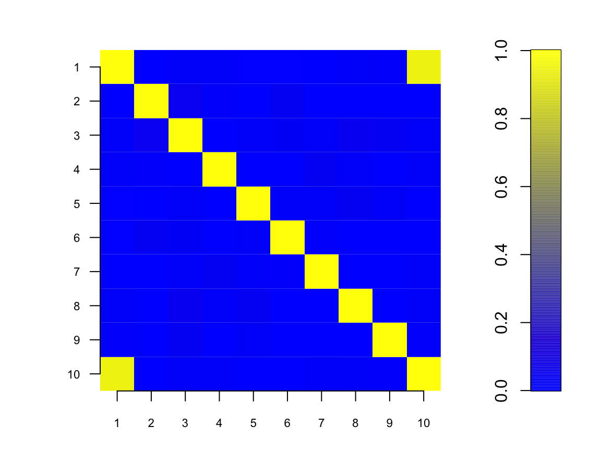
coef_sum=rep(0,length(group))
names(coef_sum)<-paste("x",1:length(group),sep="")
error_counter=0
for(i in 1:NDatasets){
tempdf=data.frame(cbind(Y=get(paste("DATA_exemple1_nb_",i,sep=""))$Y,
get(paste("DATA_exemple1_nb_",i,sep=""))$X))
tempcoef=coef(lm(Y~.-1,data=tempdf))
if(is.null(tempcoef)){
cat("Error in lm fit, skip coefficients\n")
error_counter=error_counter+1
} else{
coef_sum=coef_sum+abs(tempcoef)
}
}
error_counter
#> [1] 0
coef_mean=coef_sum/NDatasetsAll fits were sucessful. Then we display and plot that the mean coefficient vector values.
coef_mean
#> x1 x2 x3 x4 x5
#> 1.508327e+00 1.518967e+00 1.491694e+00 1.437883e-15 1.857978e-15
#> x6 x7 x8 x9 x10
#> 2.524863e-15 1.848380e-15 2.314167e-15 2.601342e-15 6.269818e-15
barplot(coef_mean)
abline(h=(minB+maxB)/2,lwd=2,lty=2,col="blue")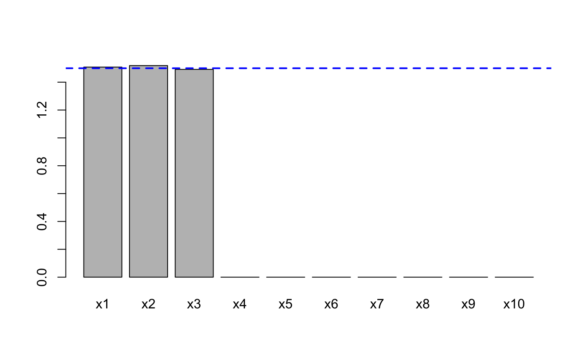
Reduce the noise in the response for the new responses by a factor \(\sqrt{5000/50}=10\). \(1/stn\cdot \beta_{support}^t\mathrm{Var}(X)\beta_{support}\) where \(\beta_{support}\) is the vector of coefficients wh
set.seed(3141)
stn <- 5000
for(i in 1:NDatasets){
X<-simulation_X(N,CM)
assign(paste("DATA_exemple1_bis_nb_",i,sep=""),simulation_DATA(X,supp,minB,maxB,stn))
}Since it is the same explanatory dataset for response generation, we can compare the \(\sigma\) between those \(NDatasets=200\) datasets.
stn_ratios=rep(0,NDatasets)
for(i in 1:NDatasets){
stn_ratios[i]<-get(paste("DATA_exemple1_nb_",i,sep=""))$sigma/
get(paste("DATA_exemple1_bis_nb_",i,sep=""))$sigma
}
all(sapply(stn_ratios,all.equal,10))
#> [1] TRUEAll the ratios are equal to 10 as anticipated.
Since, the correlation structure is the same as before, we do not need to check it again. As befor, we infer the coefficients values of a linear model using the lm function.
coef_sum_bis=rep(0,length(group))
names(coef_sum_bis)<-paste("x",1:length(group),sep="")
error_counter_bis=0
for(i in 1:NDatasets){
tempdf=data.frame(cbind(Y=get(paste("DATA_exemple1_bis_nb_",i,sep=""))$Y,
get(paste("DATA_exemple1_bis_nb_",i,sep=""))$X))
tempcoef=coef(lm(Y~.-1,data=tempdf))
if(is.null(tempcoef)){
cat("Error in lm fit, skip coefficients\n")
error_counter_bis=error_counte_bisr+1
} else{
coef_sum_bis=coef_sum_bis+abs(tempcoef)
}
}
error_counter_bis
#> [1] 0
coef_mean_bis=coef_sum_bis/NDatasetsAll fits were sucessful. Then we display and plot that the mean coefficient vector values. As expected, the noise reduction enhances the retrieval of the true mean coefficient absolute values by the models.
coef_mean_bis
#> x1 x2 x3 x4 x5
#> 1.508327e+00 1.518967e+00 1.491694e+00 1.437883e-15 1.857978e-15
#> x6 x7 x8 x9 x10
#> 2.524863e-15 1.848380e-15 2.314167e-15 2.601342e-15 6.269818e-15
barplot(coef_mean_bis)
abline(h=(minB+maxB)/2,lwd=2,lty=2,col="blue")The simulation process looks sucessfull. What are the confidence indices for those variables?
We want to creates \(NDatasets=200\) datasets with \(\textrm{length}(group)=50\) variables and \(N=20\) observations. In that example we want \(1\) group:
We now check the correlation structure of the explanatory variable. First we compute the mean correlation matrix.
corr_sum=matrix(0,length(group),length(group))
for(i in 1:NDatasets){
corr_sum=corr_sum+cor(get(paste("DATA_exemple2_nb_",i,sep=""))$X)
}
corr_mean=corr_sum/NDatasetsThen we display and plot that the mean correlation matrix.
corr_mean
#> [,1] [,2] [,3] [,4] [,5] [,6]
#> [1,] 1.0000000 0.4875195 0.4774265 0.4739869 0.4796578 0.4927521
#> [2,] 0.4875195 1.0000000 0.4750680 0.4940743 0.4842295 0.4988293
#> [3,] 0.4774265 0.4750680 1.0000000 0.4799584 0.4690139 0.4831884
#> [4,] 0.4739869 0.4940743 0.4799584 1.0000000 0.4990798 0.4995625
#> [5,] 0.4796578 0.4842295 0.4690139 0.4990798 1.0000000 0.4890548
#> [6,] 0.4927521 0.4988293 0.4831884 0.4995625 0.4890548 1.0000000
#> [7,] 0.4898313 0.4937678 0.4765315 0.4928739 0.4839137 0.4980120
#> [8,] 0.4786241 0.4904904 0.4871110 0.4799335 0.4807772 0.5015775
#> [9,] 0.4821186 0.4801270 0.4648431 0.4774361 0.4657147 0.4942747
#> [10,] 0.4875410 0.4690954 0.4669033 0.4832185 0.4781301 0.4873754
#> [11,] 0.4783657 0.4770548 0.4796298 0.5025294 0.4695987 0.4947963
#> [12,] 0.4576129 0.4687866 0.4600303 0.4594116 0.4642672 0.4701666
#> [13,] 0.4822459 0.4883539 0.4771578 0.4894813 0.4756020 0.4798124
#> [14,] 0.4920481 0.4873377 0.4770949 0.4897802 0.4788390 0.4987037
#> [15,] 0.4782112 0.4778776 0.4682025 0.4967626 0.4853587 0.4876864
#> [16,] 0.4864012 0.4678037 0.4556066 0.4886135 0.4834922 0.4948217
#> [17,] 0.4734487 0.4828857 0.4685047 0.4984130 0.4939708 0.4952123
#> [18,] 0.4859982 0.4722309 0.4530913 0.4972202 0.4672407 0.5002855
#> [19,] 0.4884947 0.4893830 0.4690835 0.4940133 0.4842340 0.4976708
#> [20,] 0.4769456 0.4882431 0.4622852 0.4875306 0.4738559 0.4877937
#> [21,] 0.4845333 0.4729958 0.4723665 0.4980684 0.4828438 0.4968660
#> [22,] 0.4755725 0.4648695 0.4603616 0.4824270 0.4681446 0.4974565
#> [23,] 0.4785721 0.4830047 0.4718748 0.4724900 0.4544924 0.4826462
#> [24,] 0.4812916 0.4860090 0.4700513 0.4931349 0.4815146 0.4950953
#> [25,] 0.4846545 0.4665178 0.4606474 0.4918001 0.4893474 0.4893959
#> [26,] 0.4808411 0.4737219 0.4643057 0.5002998 0.4803186 0.5013771
#> [27,] 0.4891191 0.4908924 0.4654202 0.4885751 0.4779262 0.4930224
#> [28,] 0.4936341 0.4869816 0.4876323 0.4677534 0.4657898 0.4827985
#> [29,] 0.4714080 0.4729929 0.4636616 0.4897793 0.4703940 0.4923885
#> [30,] 0.4917403 0.4850833 0.4945158 0.5115070 0.4901434 0.4877026
#> [31,] 0.4783833 0.4748192 0.4309901 0.4816259 0.4576951 0.4656926
#> [32,] 0.4873584 0.4826642 0.4780154 0.4854468 0.4827977 0.4901430
#> [33,] 0.4640036 0.4813325 0.4652324 0.4990741 0.4855674 0.5095961
#> [34,] 0.4792123 0.4777674 0.4716173 0.4870715 0.4947423 0.4848990
#> [35,] 0.4901280 0.4862023 0.4759520 0.4949398 0.4953567 0.4964275
#> [36,] 0.4725565 0.4894948 0.4625650 0.4954372 0.4948100 0.4765726
#> [37,] 0.4719593 0.4855221 0.4831415 0.4754273 0.4637818 0.4865522
#> [38,] 0.4779563 0.4774590 0.4749940 0.4717642 0.4883992 0.4740700
#> [39,] 0.4721031 0.4674040 0.4705461 0.4714857 0.4787467 0.4947978
#> [40,] 0.4869209 0.4722870 0.4853659 0.4973100 0.4887614 0.4910427
#> [41,] 0.4755148 0.4802082 0.4678359 0.4840367 0.4915594 0.4872499
#> [42,] 0.4933048 0.4961259 0.4716815 0.4952857 0.4705448 0.5021658
#> [43,] 0.4692270 0.4563265 0.4744040 0.4750798 0.4793421 0.4945674
#> [44,] 0.4764247 0.4608961 0.4579432 0.4963250 0.4669837 0.4832757
#> [45,] 0.4899229 0.4851334 0.4746741 0.4920976 0.4682805 0.4816624
#> [46,] 0.4889441 0.4802540 0.4709218 0.4870914 0.4806206 0.4772949
#> [47,] 0.4698197 0.4668164 0.4669458 0.4767222 0.4708015 0.4843022
#> [48,] 0.4764185 0.4806782 0.4692607 0.4887845 0.4810478 0.4804733
#> [49,] 0.4784021 0.4907013 0.4636844 0.4862231 0.4718067 0.4974101
#> [50,] 0.4849035 0.4764679 0.4687569 0.4909447 0.4699619 0.4921324
#> [,7] [,8] [,9] [,10] [,11] [,12]
#> [1,] 0.4898313 0.4786241 0.4821186 0.4875410 0.4783657 0.4576129
#> [2,] 0.4937678 0.4904904 0.4801270 0.4690954 0.4770548 0.4687866
#> [3,] 0.4765315 0.4871110 0.4648431 0.4669033 0.4796298 0.4600303
#> [4,] 0.4928739 0.4799335 0.4774361 0.4832185 0.5025294 0.4594116
#> [5,] 0.4839137 0.4807772 0.4657147 0.4781301 0.4695987 0.4642672
#> [6,] 0.4980120 0.5015775 0.4942747 0.4873754 0.4947963 0.4701666
#> [7,] 1.0000000 0.4766888 0.4786140 0.4825714 0.4892342 0.4788017
#> [8,] 0.4766888 1.0000000 0.4783224 0.4832658 0.4763580 0.4674537
#> [9,] 0.4786140 0.4783224 1.0000000 0.4769654 0.4720242 0.4746469
#> [10,] 0.4825714 0.4832658 0.4769654 1.0000000 0.4918464 0.4709846
#> [11,] 0.4892342 0.4763580 0.4720242 0.4918464 1.0000000 0.4636345
#> [12,] 0.4788017 0.4674537 0.4746469 0.4709846 0.4636345 1.0000000
#> [13,] 0.4808382 0.4956266 0.4823945 0.4936922 0.4731281 0.4801398
#> [14,] 0.4883376 0.4930876 0.4797224 0.5033033 0.4920632 0.4698280
#> [15,] 0.4792324 0.4809700 0.4768434 0.4866386 0.4808335 0.4696827
#> [16,] 0.4868757 0.4895207 0.4721254 0.5011239 0.4674742 0.4619399
#> [17,] 0.4763295 0.4706260 0.4743240 0.4958309 0.4874545 0.4704200
#> [18,] 0.4629523 0.4762839 0.4805138 0.4737332 0.4878792 0.4655437
#> [19,] 0.4817665 0.4944945 0.4875990 0.4829353 0.4844524 0.4773638
#> [20,] 0.4743795 0.4767088 0.4836865 0.4852129 0.4742222 0.4836104
#> [21,] 0.4939446 0.4869934 0.4759185 0.4892903 0.4778314 0.4556323
#> [22,] 0.4763436 0.4799268 0.4822721 0.4856681 0.4666168 0.4766126
#> [23,] 0.4733935 0.4954698 0.4783873 0.4791022 0.4766153 0.4582730
#> [24,] 0.4875954 0.4984575 0.4723351 0.4961801 0.4859154 0.4687650
#> [25,] 0.4739336 0.4701275 0.4612150 0.4739090 0.4766505 0.4615609
#> [26,] 0.4831338 0.4815275 0.4703430 0.4880500 0.4721046 0.4479072
#> [27,] 0.4916385 0.4841950 0.4754536 0.4815638 0.4937348 0.4729812
#> [28,] 0.4770920 0.4781211 0.4770095 0.4780036 0.4775544 0.4595986
#> [29,] 0.4809823 0.4843828 0.4769052 0.4858577 0.4819737 0.4755582
#> [30,] 0.4821198 0.4804490 0.4686953 0.4789211 0.4836126 0.4643350
#> [31,] 0.4771737 0.4757865 0.4646181 0.4743184 0.4703910 0.4486803
#> [32,] 0.4910006 0.4774881 0.4892755 0.4896759 0.4762494 0.4824998
#> [33,] 0.4915774 0.4885218 0.4760087 0.5045791 0.4916346 0.4755129
#> [34,] 0.5020113 0.4831743 0.4828129 0.4958861 0.4857938 0.4755785
#> [35,] 0.4955914 0.5002030 0.5050260 0.4980666 0.4861022 0.4558443
#> [36,] 0.4781649 0.4888230 0.4759993 0.4730603 0.4865827 0.4657525
#> [37,] 0.4781031 0.4791546 0.4750702 0.4784534 0.4849143 0.4556314
#> [38,] 0.4727700 0.4974627 0.4985710 0.4844597 0.4828155 0.4644094
#> [39,] 0.4911010 0.4762907 0.4720078 0.4712645 0.4578978 0.4657783
#> [40,] 0.4820505 0.4817914 0.4738119 0.4930812 0.4830126 0.4656365
#> [41,] 0.4825601 0.4836127 0.4860934 0.4878069 0.4759695 0.4480472
#> [42,] 0.5018230 0.4744781 0.4740408 0.4880989 0.5045427 0.4836311
#> [43,] 0.4735202 0.4580146 0.4619681 0.4641387 0.4643393 0.4672788
#> [44,] 0.4651638 0.4733707 0.4682082 0.4830317 0.4781812 0.4636922
#> [45,] 0.4711068 0.4831673 0.4937510 0.4804080 0.4842292 0.4483362
#> [46,] 0.4655142 0.4876824 0.4871867 0.4599700 0.4759348 0.4721072
#> [47,] 0.4806587 0.4705897 0.4614901 0.4632926 0.4781888 0.4584353
#> [48,] 0.4782227 0.4798805 0.4735808 0.4855319 0.4567081 0.4723551
#> [49,] 0.4801952 0.4833423 0.4692315 0.4660855 0.4922189 0.4715573
#> [50,] 0.4860767 0.4836131 0.4878037 0.4935527 0.4784185 0.4713054
#> [,13] [,14] [,15] [,16] [,17] [,18]
#> [1,] 0.4822459 0.4920481 0.4782112 0.4864012 0.4734487 0.4859982
#> [2,] 0.4883539 0.4873377 0.4778776 0.4678037 0.4828857 0.4722309
#> [3,] 0.4771578 0.4770949 0.4682025 0.4556066 0.4685047 0.4530913
#> [4,] 0.4894813 0.4897802 0.4967626 0.4886135 0.4984130 0.4972202
#> [5,] 0.4756020 0.4788390 0.4853587 0.4834922 0.4939708 0.4672407
#> [6,] 0.4798124 0.4987037 0.4876864 0.4948217 0.4952123 0.5002855
#> [7,] 0.4808382 0.4883376 0.4792324 0.4868757 0.4763295 0.4629523
#> [8,] 0.4956266 0.4930876 0.4809700 0.4895207 0.4706260 0.4762839
#> [9,] 0.4823945 0.4797224 0.4768434 0.4721254 0.4743240 0.4805138
#> [10,] 0.4936922 0.5033033 0.4866386 0.5011239 0.4958309 0.4737332
#> [11,] 0.4731281 0.4920632 0.4808335 0.4674742 0.4874545 0.4878792
#> [12,] 0.4801398 0.4698280 0.4696827 0.4619399 0.4704200 0.4655437
#> [13,] 1.0000000 0.4789032 0.4631489 0.4879294 0.4704248 0.4732588
#> [14,] 0.4789032 1.0000000 0.4845417 0.4980672 0.4937152 0.4854271
#> [15,] 0.4631489 0.4845417 1.0000000 0.4731678 0.4746595 0.4681185
#> [16,] 0.4879294 0.4980672 0.4731678 1.0000000 0.4809930 0.4735428
#> [17,] 0.4704248 0.4937152 0.4746595 0.4809930 1.0000000 0.4720495
#> [18,] 0.4732588 0.4854271 0.4681185 0.4735428 0.4720495 1.0000000
#> [19,] 0.4668812 0.4946057 0.4861018 0.4787652 0.4937523 0.4770071
#> [20,] 0.4971925 0.4825626 0.4604413 0.4844063 0.4817453 0.4948884
#> [21,] 0.4732092 0.4861145 0.4711094 0.4870924 0.4896825 0.4786695
#> [22,] 0.4698735 0.4756805 0.4792106 0.4687424 0.4829915 0.4810291
#> [23,] 0.4841780 0.4852777 0.4738920 0.4703117 0.4682705 0.4761131
#> [24,] 0.4843245 0.5024379 0.4811257 0.4845624 0.4775550 0.4768543
#> [25,] 0.4763987 0.4975271 0.4833403 0.4676995 0.4783171 0.4714961
#> [26,] 0.4883465 0.4971958 0.4664270 0.4924090 0.4559548 0.4819749
#> [27,] 0.4710936 0.5016559 0.4702802 0.4952534 0.4865219 0.4786264
#> [28,] 0.4757798 0.4803859 0.4618633 0.4886671 0.4821822 0.4776424
#> [29,] 0.4617197 0.4854800 0.4615138 0.4797819 0.4650107 0.4562019
#> [30,] 0.4818490 0.4941252 0.4794231 0.4851408 0.4900289 0.4673316
#> [31,] 0.4588550 0.4832689 0.4516348 0.4905987 0.4514776 0.4618579
#> [32,] 0.4773905 0.4778628 0.4875326 0.4885809 0.4862686 0.4833852
#> [33,] 0.4758130 0.4895344 0.4911680 0.4743478 0.5003358 0.4698409
#> [34,] 0.4791247 0.4997541 0.4869399 0.4840939 0.4948702 0.4807103
#> [35,] 0.4973178 0.4864749 0.4723170 0.4806243 0.4990420 0.4759839
#> [36,] 0.4747224 0.4880573 0.4602246 0.4890472 0.4755979 0.4753483
#> [37,] 0.4693889 0.4836012 0.4577902 0.4748452 0.4850622 0.4741645
#> [38,] 0.4806686 0.5029385 0.4685874 0.4912245 0.4858502 0.4780472
#> [39,] 0.4692677 0.4959553 0.4742003 0.4723223 0.4836616 0.4911557
#> [40,] 0.4701200 0.4875910 0.4596650 0.4736314 0.4810183 0.5101570
#> [41,] 0.4793641 0.4791292 0.4799495 0.4678382 0.4750211 0.4529480
#> [42,] 0.4848750 0.5023458 0.4740858 0.4889578 0.4908916 0.4855618
#> [43,] 0.4641609 0.4840716 0.4646359 0.4661313 0.4623347 0.4568615
#> [44,] 0.4798761 0.4907868 0.4823694 0.4871395 0.4749000 0.4611081
#> [45,] 0.4715834 0.4709005 0.4673893 0.4874867 0.4819896 0.4771831
#> [46,] 0.4745566 0.4818530 0.4810260 0.4850721 0.4746443 0.4809699
#> [47,] 0.4748409 0.4693787 0.4617537 0.4773809 0.4615618 0.4701352
#> [48,] 0.4710138 0.4738168 0.4780895 0.4792191 0.4875543 0.4801255
#> [49,] 0.4668038 0.4910078 0.4686349 0.4800444 0.4859594 0.4822453
#> [50,] 0.4795008 0.4920537 0.4783105 0.4997076 0.5038590 0.4980590
#> [,19] [,20] [,21] [,22] [,23] [,24]
#> [1,] 0.4884947 0.4769456 0.4845333 0.4755725 0.4785721 0.4812916
#> [2,] 0.4893830 0.4882431 0.4729958 0.4648695 0.4830047 0.4860090
#> [3,] 0.4690835 0.4622852 0.4723665 0.4603616 0.4718748 0.4700513
#> [4,] 0.4940133 0.4875306 0.4980684 0.4824270 0.4724900 0.4931349
#> [5,] 0.4842340 0.4738559 0.4828438 0.4681446 0.4544924 0.4815146
#> [6,] 0.4976708 0.4877937 0.4968660 0.4974565 0.4826462 0.4950953
#> [7,] 0.4817665 0.4743795 0.4939446 0.4763436 0.4733935 0.4875954
#> [8,] 0.4944945 0.4767088 0.4869934 0.4799268 0.4954698 0.4984575
#> [9,] 0.4875990 0.4836865 0.4759185 0.4822721 0.4783873 0.4723351
#> [10,] 0.4829353 0.4852129 0.4892903 0.4856681 0.4791022 0.4961801
#> [11,] 0.4844524 0.4742222 0.4778314 0.4666168 0.4766153 0.4859154
#> [12,] 0.4773638 0.4836104 0.4556323 0.4766126 0.4582730 0.4687650
#> [13,] 0.4668812 0.4971925 0.4732092 0.4698735 0.4841780 0.4843245
#> [14,] 0.4946057 0.4825626 0.4861145 0.4756805 0.4852777 0.5024379
#> [15,] 0.4861018 0.4604413 0.4711094 0.4792106 0.4738920 0.4811257
#> [16,] 0.4787652 0.4844063 0.4870924 0.4687424 0.4703117 0.4845624
#> [17,] 0.4937523 0.4817453 0.4896825 0.4829915 0.4682705 0.4775550
#> [18,] 0.4770071 0.4948884 0.4786695 0.4810291 0.4761131 0.4768543
#> [19,] 1.0000000 0.4754084 0.5012192 0.4922865 0.4850864 0.5055237
#> [20,] 0.4754084 1.0000000 0.4883997 0.4754209 0.4823155 0.5000072
#> [21,] 0.5012192 0.4883997 1.0000000 0.4746453 0.4747263 0.4857632
#> [22,] 0.4922865 0.4754209 0.4746453 1.0000000 0.4733554 0.4743848
#> [23,] 0.4850864 0.4823155 0.4747263 0.4733554 1.0000000 0.4816693
#> [24,] 0.5055237 0.5000072 0.4857632 0.4743848 0.4816693 1.0000000
#> [25,] 0.4678465 0.4618952 0.4752482 0.4609920 0.4700499 0.4848413
#> [26,] 0.4937717 0.4707192 0.4771535 0.4729034 0.4704727 0.4886300
#> [27,] 0.4875837 0.4813291 0.4849836 0.4901881 0.4780250 0.4872373
#> [28,] 0.4915920 0.4803344 0.4886029 0.4687718 0.4674699 0.4769543
#> [29,] 0.4693262 0.4819931 0.4732389 0.4787710 0.4798845 0.4821392
#> [30,] 0.4900084 0.4673584 0.4846656 0.4762996 0.4733886 0.4846783
#> [31,] 0.4702068 0.4594470 0.4675036 0.4617597 0.4592595 0.4574785
#> [32,] 0.5072811 0.4933209 0.4838239 0.4951008 0.4774900 0.4925186
#> [33,] 0.4940233 0.4997758 0.4748050 0.4849792 0.4847441 0.5066660
#> [34,] 0.4812755 0.4850456 0.4972202 0.4837688 0.4830551 0.4900148
#> [35,] 0.4926150 0.4876836 0.4947651 0.4791834 0.4831424 0.4924625
#> [36,] 0.4892957 0.4816092 0.4724310 0.4592440 0.4592336 0.4761788
#> [37,] 0.4851519 0.4752952 0.4922674 0.4720202 0.4775273 0.4971348
#> [38,] 0.4699658 0.4929048 0.4846303 0.4632892 0.4934966 0.4914950
#> [39,] 0.4909705 0.4788635 0.4943722 0.4716981 0.4677916 0.4767960
#> [40,] 0.4756236 0.4945769 0.4789939 0.4635965 0.4816470 0.4782357
#> [41,] 0.4853911 0.4753834 0.4896893 0.4770920 0.4851498 0.4930042
#> [42,] 0.4958182 0.4939242 0.5008919 0.4702595 0.4792359 0.5029623
#> [43,] 0.4606220 0.4573481 0.4703628 0.4663938 0.4512981 0.4700375
#> [44,] 0.4819451 0.4825397 0.4845454 0.4760472 0.4596196 0.4857422
#> [45,] 0.4997653 0.4751397 0.4875842 0.4772941 0.4666272 0.4778772
#> [46,] 0.4797301 0.4709663 0.4696477 0.4715926 0.4824859 0.4881119
#> [47,] 0.4684864 0.4576279 0.4692205 0.4584452 0.4809925 0.4583363
#> [48,] 0.4934419 0.4960229 0.4860214 0.4770425 0.4724308 0.4865465
#> [49,] 0.5032821 0.4704966 0.4712555 0.4919867 0.4832319 0.4999334
#> [50,] 0.4915269 0.4757791 0.4872415 0.4909845 0.4680224 0.4811636
#> [,25] [,26] [,27] [,28] [,29] [,30]
#> [1,] 0.4846545 0.4808411 0.4891191 0.4936341 0.4714080 0.4917403
#> [2,] 0.4665178 0.4737219 0.4908924 0.4869816 0.4729929 0.4850833
#> [3,] 0.4606474 0.4643057 0.4654202 0.4876323 0.4636616 0.4945158
#> [4,] 0.4918001 0.5002998 0.4885751 0.4677534 0.4897793 0.5115070
#> [5,] 0.4893474 0.4803186 0.4779262 0.4657898 0.4703940 0.4901434
#> [6,] 0.4893959 0.5013771 0.4930224 0.4827985 0.4923885 0.4877026
#> [7,] 0.4739336 0.4831338 0.4916385 0.4770920 0.4809823 0.4821198
#> [8,] 0.4701275 0.4815275 0.4841950 0.4781211 0.4843828 0.4804490
#> [9,] 0.4612150 0.4703430 0.4754536 0.4770095 0.4769052 0.4686953
#> [10,] 0.4739090 0.4880500 0.4815638 0.4780036 0.4858577 0.4789211
#> [11,] 0.4766505 0.4721046 0.4937348 0.4775544 0.4819737 0.4836126
#> [12,] 0.4615609 0.4479072 0.4729812 0.4595986 0.4755582 0.4643350
#> [13,] 0.4763987 0.4883465 0.4710936 0.4757798 0.4617197 0.4818490
#> [14,] 0.4975271 0.4971958 0.5016559 0.4803859 0.4854800 0.4941252
#> [15,] 0.4833403 0.4664270 0.4702802 0.4618633 0.4615138 0.4794231
#> [16,] 0.4676995 0.4924090 0.4952534 0.4886671 0.4797819 0.4851408
#> [17,] 0.4783171 0.4559548 0.4865219 0.4821822 0.4650107 0.4900289
#> [18,] 0.4714961 0.4819749 0.4786264 0.4776424 0.4562019 0.4673316
#> [19,] 0.4678465 0.4937717 0.4875837 0.4915920 0.4693262 0.4900084
#> [20,] 0.4618952 0.4707192 0.4813291 0.4803344 0.4819931 0.4673584
#> [21,] 0.4752482 0.4771535 0.4849836 0.4886029 0.4732389 0.4846656
#> [22,] 0.4609920 0.4729034 0.4901881 0.4687718 0.4787710 0.4762996
#> [23,] 0.4700499 0.4704727 0.4780250 0.4674699 0.4798845 0.4733886
#> [24,] 0.4848413 0.4886300 0.4872373 0.4769543 0.4821392 0.4846783
#> [25,] 1.0000000 0.4699747 0.4779304 0.4717951 0.4680958 0.4700652
#> [26,] 0.4699747 1.0000000 0.4763509 0.4871698 0.4656716 0.4911607
#> [27,] 0.4779304 0.4763509 1.0000000 0.4836631 0.5020420 0.4722124
#> [28,] 0.4717951 0.4871698 0.4836631 1.0000000 0.4782590 0.4816880
#> [29,] 0.4680958 0.4656716 0.5020420 0.4782590 1.0000000 0.4748626
#> [30,] 0.4700652 0.4911607 0.4722124 0.4816880 0.4748626 1.0000000
#> [31,] 0.4579184 0.4658456 0.4628974 0.4719452 0.4553873 0.4594278
#> [32,] 0.4780924 0.4982092 0.4875129 0.4852813 0.4821608 0.4810879
#> [33,] 0.4915690 0.4748219 0.4762910 0.4844163 0.4659822 0.4866750
#> [34,] 0.4728123 0.4874426 0.4944155 0.4866585 0.4754472 0.4870758
#> [35,] 0.4890750 0.4838186 0.4842999 0.4951773 0.4843536 0.4927255
#> [36,] 0.4730801 0.4711464 0.5001751 0.4911746 0.4662002 0.4568438
#> [37,] 0.4740084 0.4937212 0.4869741 0.4755865 0.4753591 0.4831007
#> [38,] 0.4831256 0.4771822 0.4903145 0.4868266 0.4776044 0.4835967
#> [39,] 0.4750279 0.4771480 0.4874694 0.4940146 0.4514690 0.4675460
#> [40,] 0.4712893 0.4721605 0.4792008 0.4756311 0.4695367 0.4847623
#> [41,] 0.4664300 0.4677565 0.4910271 0.4764958 0.4631839 0.4854904
#> [42,] 0.4834758 0.4726972 0.5037978 0.4856906 0.4844951 0.4871197
#> [43,] 0.4575678 0.4627637 0.4674105 0.4783447 0.4635329 0.4724908
#> [44,] 0.4862799 0.4641265 0.4557391 0.4731525 0.4709091 0.4834571
#> [45,] 0.4728090 0.4824759 0.4935210 0.4725480 0.4846178 0.4698675
#> [46,] 0.4738857 0.4748842 0.4971801 0.4828262 0.4627529 0.4804461
#> [47,] 0.4599856 0.4708402 0.4705258 0.4665324 0.4565097 0.4670755
#> [48,] 0.4645498 0.4714618 0.4831064 0.4919194 0.4795932 0.4638801
#> [49,] 0.4743316 0.4734405 0.4951686 0.4845578 0.4780198 0.4794250
#> [50,] 0.4707225 0.4979159 0.4760636 0.4821654 0.4869966 0.4825466
#> [,31] [,32] [,33] [,34] [,35] [,36]
#> [1,] 0.4783833 0.4873584 0.4640036 0.4792123 0.4901280 0.4725565
#> [2,] 0.4748192 0.4826642 0.4813325 0.4777674 0.4862023 0.4894948
#> [3,] 0.4309901 0.4780154 0.4652324 0.4716173 0.4759520 0.4625650
#> [4,] 0.4816259 0.4854468 0.4990741 0.4870715 0.4949398 0.4954372
#> [5,] 0.4576951 0.4827977 0.4855674 0.4947423 0.4953567 0.4948100
#> [6,] 0.4656926 0.4901430 0.5095961 0.4848990 0.4964275 0.4765726
#> [7,] 0.4771737 0.4910006 0.4915774 0.5020113 0.4955914 0.4781649
#> [8,] 0.4757865 0.4774881 0.4885218 0.4831743 0.5002030 0.4888230
#> [9,] 0.4646181 0.4892755 0.4760087 0.4828129 0.5050260 0.4759993
#> [10,] 0.4743184 0.4896759 0.5045791 0.4958861 0.4980666 0.4730603
#> [11,] 0.4703910 0.4762494 0.4916346 0.4857938 0.4861022 0.4865827
#> [12,] 0.4486803 0.4824998 0.4755129 0.4755785 0.4558443 0.4657525
#> [13,] 0.4588550 0.4773905 0.4758130 0.4791247 0.4973178 0.4747224
#> [14,] 0.4832689 0.4778628 0.4895344 0.4997541 0.4864749 0.4880573
#> [15,] 0.4516348 0.4875326 0.4911680 0.4869399 0.4723170 0.4602246
#> [16,] 0.4905987 0.4885809 0.4743478 0.4840939 0.4806243 0.4890472
#> [17,] 0.4514776 0.4862686 0.5003358 0.4948702 0.4990420 0.4755979
#> [18,] 0.4618579 0.4833852 0.4698409 0.4807103 0.4759839 0.4753483
#> [19,] 0.4702068 0.5072811 0.4940233 0.4812755 0.4926150 0.4892957
#> [20,] 0.4594470 0.4933209 0.4997758 0.4850456 0.4876836 0.4816092
#> [21,] 0.4675036 0.4838239 0.4748050 0.4972202 0.4947651 0.4724310
#> [22,] 0.4617597 0.4951008 0.4849792 0.4837688 0.4791834 0.4592440
#> [23,] 0.4592595 0.4774900 0.4847441 0.4830551 0.4831424 0.4592336
#> [24,] 0.4574785 0.4925186 0.5066660 0.4900148 0.4924625 0.4761788
#> [25,] 0.4579184 0.4780924 0.4915690 0.4728123 0.4890750 0.4730801
#> [26,] 0.4658456 0.4982092 0.4748219 0.4874426 0.4838186 0.4711464
#> [27,] 0.4628974 0.4875129 0.4762910 0.4944155 0.4842999 0.5001751
#> [28,] 0.4719452 0.4852813 0.4844163 0.4866585 0.4951773 0.4911746
#> [29,] 0.4553873 0.4821608 0.4659822 0.4754472 0.4843536 0.4662002
#> [30,] 0.4594278 0.4810879 0.4866750 0.4870758 0.4927255 0.4568438
#> [31,] 1.0000000 0.4620876 0.4716509 0.4636320 0.4719244 0.4626942
#> [32,] 0.4620876 1.0000000 0.4952083 0.4833661 0.4807045 0.4837289
#> [33,] 0.4716509 0.4952083 1.0000000 0.5073322 0.4993521 0.4815846
#> [34,] 0.4636320 0.4833661 0.5073322 1.0000000 0.4767452 0.4791649
#> [35,] 0.4719244 0.4807045 0.4993521 0.4767452 1.0000000 0.4954873
#> [36,] 0.4626942 0.4837289 0.4815846 0.4791649 0.4954873 1.0000000
#> [37,] 0.4295853 0.4813682 0.4874477 0.4947660 0.4834063 0.4955254
#> [38,] 0.4673628 0.4978741 0.4758514 0.4800969 0.4878552 0.4757290
#> [39,] 0.4672461 0.4846360 0.4990995 0.4711715 0.4863886 0.4821307
#> [40,] 0.4683702 0.4781131 0.4784026 0.4855561 0.4912253 0.4710253
#> [41,] 0.4633036 0.4731635 0.4887457 0.4808570 0.4895117 0.4781087
#> [42,] 0.4706382 0.4943782 0.4951537 0.4742021 0.4886105 0.4820123
#> [43,] 0.4526292 0.4572038 0.4726292 0.4692623 0.4784463 0.4486976
#> [44,] 0.4604001 0.4717885 0.4795662 0.4800765 0.4751296 0.4937968
#> [45,] 0.4482102 0.4791983 0.4843833 0.4741117 0.4959109 0.4776127
#> [46,] 0.4555084 0.4811093 0.4775211 0.4948839 0.4803134 0.4784982
#> [47,] 0.4569849 0.4879905 0.4732806 0.4789830 0.4920558 0.4649036
#> [48,] 0.4668865 0.4870814 0.4790007 0.4875484 0.4844537 0.4917520
#> [49,] 0.4746189 0.4982155 0.4892072 0.4882770 0.4935922 0.4824333
#> [50,] 0.4801893 0.4886662 0.4882084 0.5020961 0.4882049 0.4799757
#> [,37] [,38] [,39] [,40] [,41] [,42]
#> [1,] 0.4719593 0.4779563 0.4721031 0.4869209 0.4755148 0.4933048
#> [2,] 0.4855221 0.4774590 0.4674040 0.4722870 0.4802082 0.4961259
#> [3,] 0.4831415 0.4749940 0.4705461 0.4853659 0.4678359 0.4716815
#> [4,] 0.4754273 0.4717642 0.4714857 0.4973100 0.4840367 0.4952857
#> [5,] 0.4637818 0.4883992 0.4787467 0.4887614 0.4915594 0.4705448
#> [6,] 0.4865522 0.4740700 0.4947978 0.4910427 0.4872499 0.5021658
#> [7,] 0.4781031 0.4727700 0.4911010 0.4820505 0.4825601 0.5018230
#> [8,] 0.4791546 0.4974627 0.4762907 0.4817914 0.4836127 0.4744781
#> [9,] 0.4750702 0.4985710 0.4720078 0.4738119 0.4860934 0.4740408
#> [10,] 0.4784534 0.4844597 0.4712645 0.4930812 0.4878069 0.4880989
#> [11,] 0.4849143 0.4828155 0.4578978 0.4830126 0.4759695 0.5045427
#> [12,] 0.4556314 0.4644094 0.4657783 0.4656365 0.4480472 0.4836311
#> [13,] 0.4693889 0.4806686 0.4692677 0.4701200 0.4793641 0.4848750
#> [14,] 0.4836012 0.5029385 0.4959553 0.4875910 0.4791292 0.5023458
#> [15,] 0.4577902 0.4685874 0.4742003 0.4596650 0.4799495 0.4740858
#> [16,] 0.4748452 0.4912245 0.4723223 0.4736314 0.4678382 0.4889578
#> [17,] 0.4850622 0.4858502 0.4836616 0.4810183 0.4750211 0.4908916
#> [18,] 0.4741645 0.4780472 0.4911557 0.5101570 0.4529480 0.4855618
#> [19,] 0.4851519 0.4699658 0.4909705 0.4756236 0.4853911 0.4958182
#> [20,] 0.4752952 0.4929048 0.4788635 0.4945769 0.4753834 0.4939242
#> [21,] 0.4922674 0.4846303 0.4943722 0.4789939 0.4896893 0.5008919
#> [22,] 0.4720202 0.4632892 0.4716981 0.4635965 0.4770920 0.4702595
#> [23,] 0.4775273 0.4934966 0.4677916 0.4816470 0.4851498 0.4792359
#> [24,] 0.4971348 0.4914950 0.4767960 0.4782357 0.4930042 0.5029623
#> [25,] 0.4740084 0.4831256 0.4750279 0.4712893 0.4664300 0.4834758
#> [26,] 0.4937212 0.4771822 0.4771480 0.4721605 0.4677565 0.4726972
#> [27,] 0.4869741 0.4903145 0.4874694 0.4792008 0.4910271 0.5037978
#> [28,] 0.4755865 0.4868266 0.4940146 0.4756311 0.4764958 0.4856906
#> [29,] 0.4753591 0.4776044 0.4514690 0.4695367 0.4631839 0.4844951
#> [30,] 0.4831007 0.4835967 0.4675460 0.4847623 0.4854904 0.4871197
#> [31,] 0.4295853 0.4673628 0.4672461 0.4683702 0.4633036 0.4706382
#> [32,] 0.4813682 0.4978741 0.4846360 0.4781131 0.4731635 0.4943782
#> [33,] 0.4874477 0.4758514 0.4990995 0.4784026 0.4887457 0.4951537
#> [34,] 0.4947660 0.4800969 0.4711715 0.4855561 0.4808570 0.4742021
#> [35,] 0.4834063 0.4878552 0.4863886 0.4912253 0.4895117 0.4886105
#> [36,] 0.4955254 0.4757290 0.4821307 0.4710253 0.4781087 0.4820123
#> [37,] 1.0000000 0.4867271 0.4853056 0.4729380 0.4768231 0.4818793
#> [38,] 0.4867271 1.0000000 0.4818559 0.4918865 0.4766136 0.4848464
#> [39,] 0.4853056 0.4818559 1.0000000 0.4797205 0.4656553 0.4964507
#> [40,] 0.4729380 0.4918865 0.4797205 1.0000000 0.4713233 0.4922323
#> [41,] 0.4768231 0.4766136 0.4656553 0.4713233 1.0000000 0.4751068
#> [42,] 0.4818793 0.4848464 0.4964507 0.4922323 0.4751068 1.0000000
#> [43,] 0.4717562 0.4701286 0.4661760 0.4783587 0.4620011 0.4740276
#> [44,] 0.4758286 0.4926909 0.4680499 0.4844188 0.4791978 0.4786672
#> [45,] 0.4683976 0.4665339 0.4737276 0.4734568 0.4637515 0.4845085
#> [46,] 0.4697897 0.4767203 0.4780609 0.4752724 0.4668417 0.5004129
#> [47,] 0.4746262 0.4798003 0.4612008 0.4762140 0.4601708 0.4809440
#> [48,] 0.4739155 0.4777139 0.4666671 0.4842808 0.4755113 0.4890844
#> [49,] 0.4823780 0.5007272 0.4700646 0.4724572 0.4785281 0.5093417
#> [50,] 0.4784760 0.5009613 0.4904122 0.4730043 0.4767526 0.4927077
#> [,43] [,44] [,45] [,46] [,47] [,48]
#> [1,] 0.4692270 0.4764247 0.4899229 0.4889441 0.4698197 0.4764185
#> [2,] 0.4563265 0.4608961 0.4851334 0.4802540 0.4668164 0.4806782
#> [3,] 0.4744040 0.4579432 0.4746741 0.4709218 0.4669458 0.4692607
#> [4,] 0.4750798 0.4963250 0.4920976 0.4870914 0.4767222 0.4887845
#> [5,] 0.4793421 0.4669837 0.4682805 0.4806206 0.4708015 0.4810478
#> [6,] 0.4945674 0.4832757 0.4816624 0.4772949 0.4843022 0.4804733
#> [7,] 0.4735202 0.4651638 0.4711068 0.4655142 0.4806587 0.4782227
#> [8,] 0.4580146 0.4733707 0.4831673 0.4876824 0.4705897 0.4798805
#> [9,] 0.4619681 0.4682082 0.4937510 0.4871867 0.4614901 0.4735808
#> [10,] 0.4641387 0.4830317 0.4804080 0.4599700 0.4632926 0.4855319
#> [11,] 0.4643393 0.4781812 0.4842292 0.4759348 0.4781888 0.4567081
#> [12,] 0.4672788 0.4636922 0.4483362 0.4721072 0.4584353 0.4723551
#> [13,] 0.4641609 0.4798761 0.4715834 0.4745566 0.4748409 0.4710138
#> [14,] 0.4840716 0.4907868 0.4709005 0.4818530 0.4693787 0.4738168
#> [15,] 0.4646359 0.4823694 0.4673893 0.4810260 0.4617537 0.4780895
#> [16,] 0.4661313 0.4871395 0.4874867 0.4850721 0.4773809 0.4792191
#> [17,] 0.4623347 0.4749000 0.4819896 0.4746443 0.4615618 0.4875543
#> [18,] 0.4568615 0.4611081 0.4771831 0.4809699 0.4701352 0.4801255
#> [19,] 0.4606220 0.4819451 0.4997653 0.4797301 0.4684864 0.4934419
#> [20,] 0.4573481 0.4825397 0.4751397 0.4709663 0.4576279 0.4960229
#> [21,] 0.4703628 0.4845454 0.4875842 0.4696477 0.4692205 0.4860214
#> [22,] 0.4663938 0.4760472 0.4772941 0.4715926 0.4584452 0.4770425
#> [23,] 0.4512981 0.4596196 0.4666272 0.4824859 0.4809925 0.4724308
#> [24,] 0.4700375 0.4857422 0.4778772 0.4881119 0.4583363 0.4865465
#> [25,] 0.4575678 0.4862799 0.4728090 0.4738857 0.4599856 0.4645498
#> [26,] 0.4627637 0.4641265 0.4824759 0.4748842 0.4708402 0.4714618
#> [27,] 0.4674105 0.4557391 0.4935210 0.4971801 0.4705258 0.4831064
#> [28,] 0.4783447 0.4731525 0.4725480 0.4828262 0.4665324 0.4919194
#> [29,] 0.4635329 0.4709091 0.4846178 0.4627529 0.4565097 0.4795932
#> [30,] 0.4724908 0.4834571 0.4698675 0.4804461 0.4670755 0.4638801
#> [31,] 0.4526292 0.4604001 0.4482102 0.4555084 0.4569849 0.4668865
#> [32,] 0.4572038 0.4717885 0.4791983 0.4811093 0.4879905 0.4870814
#> [33,] 0.4726292 0.4795662 0.4843833 0.4775211 0.4732806 0.4790007
#> [34,] 0.4692623 0.4800765 0.4741117 0.4948839 0.4789830 0.4875484
#> [35,] 0.4784463 0.4751296 0.4959109 0.4803134 0.4920558 0.4844537
#> [36,] 0.4486976 0.4937968 0.4776127 0.4784982 0.4649036 0.4917520
#> [37,] 0.4717562 0.4758286 0.4683976 0.4697897 0.4746262 0.4739155
#> [38,] 0.4701286 0.4926909 0.4665339 0.4767203 0.4798003 0.4777139
#> [39,] 0.4661760 0.4680499 0.4737276 0.4780609 0.4612008 0.4666671
#> [40,] 0.4783587 0.4844188 0.4734568 0.4752724 0.4762140 0.4842808
#> [41,] 0.4620011 0.4791978 0.4637515 0.4668417 0.4601708 0.4755113
#> [42,] 0.4740276 0.4786672 0.4845085 0.5004129 0.4809440 0.4890844
#> [43,] 1.0000000 0.4664148 0.4566511 0.4649348 0.4538675 0.4565943
#> [44,] 0.4664148 1.0000000 0.4806406 0.4821230 0.4633071 0.4726662
#> [45,] 0.4566511 0.4806406 1.0000000 0.4715756 0.4708753 0.4785339
#> [46,] 0.4649348 0.4821230 0.4715756 1.0000000 0.4585907 0.4972861
#> [47,] 0.4538675 0.4633071 0.4708753 0.4585907 1.0000000 0.4743991
#> [48,] 0.4565943 0.4726662 0.4785339 0.4972861 0.4743991 1.0000000
#> [49,] 0.4727540 0.4906404 0.4803063 0.4910970 0.4863589 0.4804347
#> [50,] 0.4630208 0.4897802 0.4881130 0.4830903 0.4792652 0.4807874
#> [,49] [,50]
#> [1,] 0.4784021 0.4849035
#> [2,] 0.4907013 0.4764679
#> [3,] 0.4636844 0.4687569
#> [4,] 0.4862231 0.4909447
#> [5,] 0.4718067 0.4699619
#> [6,] 0.4974101 0.4921324
#> [7,] 0.4801952 0.4860767
#> [8,] 0.4833423 0.4836131
#> [9,] 0.4692315 0.4878037
#> [10,] 0.4660855 0.4935527
#> [11,] 0.4922189 0.4784185
#> [12,] 0.4715573 0.4713054
#> [13,] 0.4668038 0.4795008
#> [14,] 0.4910078 0.4920537
#> [15,] 0.4686349 0.4783105
#> [16,] 0.4800444 0.4997076
#> [17,] 0.4859594 0.5038590
#> [18,] 0.4822453 0.4980590
#> [19,] 0.5032821 0.4915269
#> [20,] 0.4704966 0.4757791
#> [21,] 0.4712555 0.4872415
#> [22,] 0.4919867 0.4909845
#> [23,] 0.4832319 0.4680224
#> [24,] 0.4999334 0.4811636
#> [25,] 0.4743316 0.4707225
#> [26,] 0.4734405 0.4979159
#> [27,] 0.4951686 0.4760636
#> [28,] 0.4845578 0.4821654
#> [29,] 0.4780198 0.4869966
#> [30,] 0.4794250 0.4825466
#> [31,] 0.4746189 0.4801893
#> [32,] 0.4982155 0.4886662
#> [33,] 0.4892072 0.4882084
#> [34,] 0.4882770 0.5020961
#> [35,] 0.4935922 0.4882049
#> [36,] 0.4824333 0.4799757
#> [37,] 0.4823780 0.4784760
#> [38,] 0.5007272 0.5009613
#> [39,] 0.4700646 0.4904122
#> [40,] 0.4724572 0.4730043
#> [41,] 0.4785281 0.4767526
#> [42,] 0.5093417 0.4927077
#> [43,] 0.4727540 0.4630208
#> [44,] 0.4906404 0.4897802
#> [45,] 0.4803063 0.4881130
#> [46,] 0.4910970 0.4830903
#> [47,] 0.4863589 0.4792652
#> [48,] 0.4804347 0.4807874
#> [49,] 1.0000000 0.4920005
#> [50,] 0.4920005 1.0000000
plot(abs(corr_mean))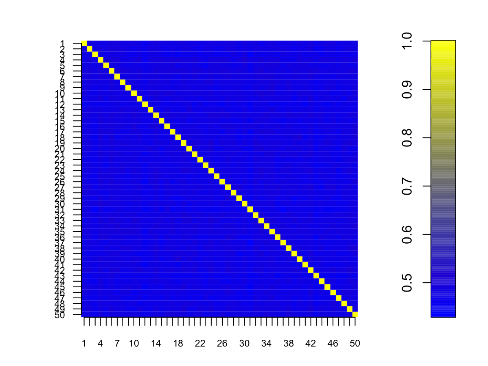
coef_sum=rep(0,length(group))
coef_lasso_sum=rep(0,length(group))
names(coef_sum)<-paste("x",1:length(group),sep="")
names(coef_lasso_sum)<-paste("x",1:length(group),sep="")
error_counter=0
for(i in 1:NDatasets){
tempdf=data.frame(cbind(Y=get(paste("DATA_exemple2_nb_",i,sep=""))$Y,
get(paste("DATA_exemple2_nb_",i,sep=""))$X))
tempcoef=coef(lm(Y~.-1,data=tempdf))
require(lars)
lasso.1 <- lars::lars(x=get(paste("DATA_exemple2_nb_",i,sep=""))$X,
y=get(paste("DATA_exemple2_nb_",i,sep=""))$Y, type="lasso",
trace=FALSE, normalize=FALSE, intercept = FALSE)
# cv.lars() uses crossvalidation to estimate optimal position in path
cv.lasso.1 <- lars::cv.lars(x=get(paste("DATA_exemple2_nb_",i,sep=""))$X,
y=get(paste("DATA_exemple2_nb_",i,sep=""))$Y,
plot.it=FALSE, type="lasso")
# Use the "+1SE rule" to find best model:
# Take the min CV and add its SE ("limit").
# Find smallest model that has its own CV within this limit (at "s.cv.1")
limit <- min(cv.lasso.1$cv) + cv.lasso.1$cv.error[which.min(cv.lasso.1$cv)]
s.cv.1 <- cv.lasso.1$index[min(which(cv.lasso.1$cv < limit))]
# Print out coefficients at optimal s.
coef_lasso_sum=coef_lasso_sum+abs(coef(lasso.1, s=s.cv.1, mode="fraction"))
if(is.null(tempcoef)){
cat("Error in lm fit, skip coefficients\n")
error_counter=error_counter+1
} else{
coef_sum=coef_sum+abs(tempcoef)
}
}
error_counter
#> [1] 0
coef_mean=coef_sum/NDatasets
coef_lasso_mean=coef_lasso_sum/NDatasetsWith regular least squares and lasso estimators all fits were sucessful, yet only 20 variables coefficients could be estimated with regular least squares estimates for the linear model. Then we display and plot that the mean coefficient vector values for the least squares estimates.
coef_mean
#> x1 x2 x3 x4 x5
#> 1.500084e+00 1.492942e+00 1.496050e+00 1.528043e+00 1.497537e+00
#> x6 x7 x8 x9 x10
#> 2.577168e-15 6.820231e-15 3.386509e-15 4.297997e-15 7.216331e-15
#> x11 x12 x13 x14 x15
#> 3.528058e-15 1.001056e-14 6.068207e-15 9.640427e-15 5.351262e-15
#> x16 x17 x18 x19 x20
#> 9.276245e-15 5.295417e-15 8.227904e-15 5.860229e-15 4.724224e-15
#> x21 x22 x23 x24 x25
#> NA NA NA NA NA
#> x26 x27 x28 x29 x30
#> NA NA NA NA NA
#> x31 x32 x33 x34 x35
#> NA NA NA NA NA
#> x36 x37 x38 x39 x40
#> NA NA NA NA NA
#> x41 x42 x43 x44 x45
#> NA NA NA NA NA
#> x46 x47 x48 x49 x50
#> NA NA NA NA NA
barplot(coef_mean)
abline(h=(minB+maxB)/2,lwd=2,lty=2,col="blue")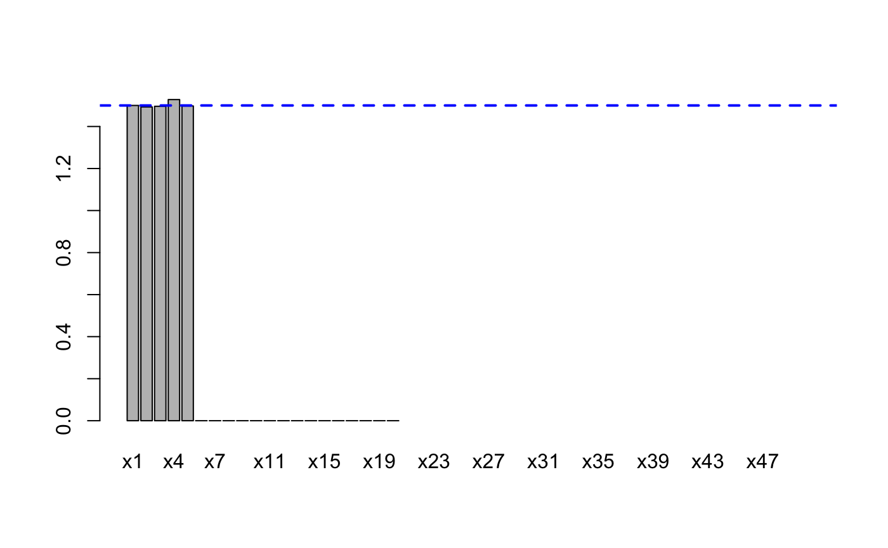
coef_lasso_mean
#> x1 x2 x3 x4 x5 x6
#> 1.020781655 1.018889052 1.035031482 1.054163515 1.000623344 0.007473859
#> x7 x8 x9 x10 x11 x12
#> 0.013204392 0.007431535 0.026662059 0.013108710 0.012142233 0.026704364
#> x13 x14 x15 x16 x17 x18
#> 0.017173946 0.013759071 0.014971375 0.009803102 0.010638803 0.020817110
#> x19 x20 x21 x22 x23 x24
#> 0.011776302 0.017783853 0.026576799 0.024363441 0.017900876 0.009379815
#> x25 x26 x27 x28 x29 x30
#> 0.016408982 0.014971089 0.020829301 0.008885959 0.004586297 0.025270340
#> x31 x32 x33 x34 x35 x36
#> 0.013851242 0.010282197 0.017552250 0.007138873 0.008011145 0.025243278
#> x37 x38 x39 x40 x41 x42
#> 0.013782052 0.005243221 0.004626377 0.010275449 0.014070472 0.016684423
#> x43 x44 x45 x46 x47 x48
#> 0.015994092 0.016769256 0.002942201 0.012305519 0.011827189 0.013573371
#> x49 x50
#> 0.007764608 0.012717856
barplot(coef_lasso_mean,ylim=c(0,1.5))
abline(h=(minB+maxB)/2,lwd=2,lty=2,col="blue")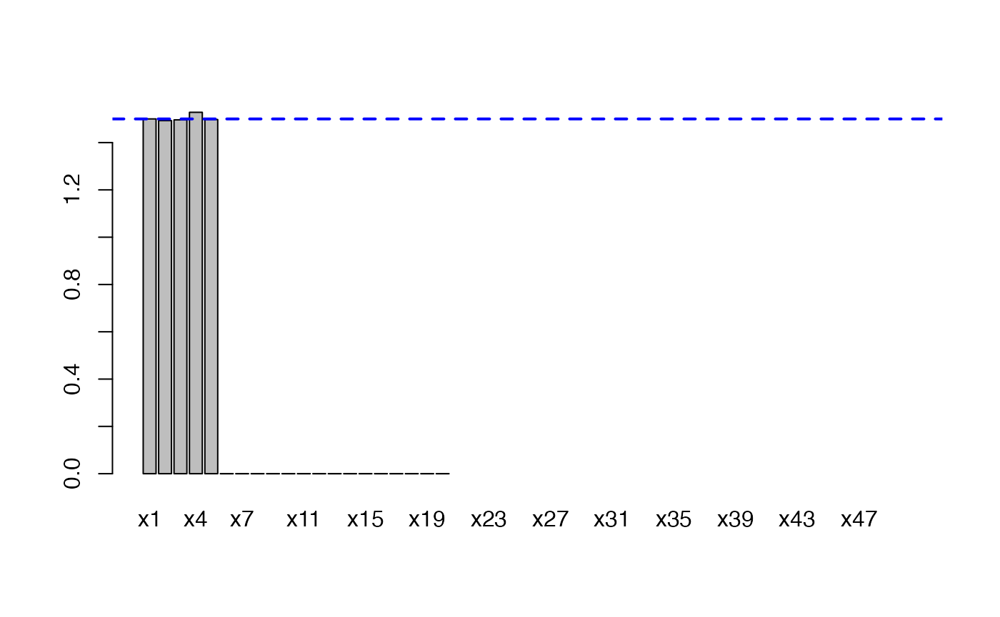
The simulation process looks sucessfull: the lasso estimates retrives mostly the correct variables, yet the other ones are also selected sometimes. What are the confidence indices for those variables?
We want to creates \(NDatasets=200\) datasets with \(\textrm{length}(supp)=100\) variables and \(N=24\) observations. In that example we use real data for the X variables that we sample from all the \(1650\) probesets that are differentially expressed between the two conditions US and S. The main interest of that simulation is that the correlation structure of the X dataset will be a real one.
First retrieve the datasets and get the differentially expressed probesets.
require(CascadeData)
data(micro_S)
data(micro_US)
require(Cascade)
micro_US<-as.micro_array(micro_US,c(60,90,240,390),6)
micro_S<-as.micro_array(micro_S,c(60,90,240,390),6)
S<-geneSelection(list(micro_S,micro_US),list("condition",c(1,2),1),-1)
Sel<-micro_S@microarray[S@name,]
summary(S)
#> N1_US_T60 N1_US_T90 N1_US_T210
#> Min. :-3.24588 Min. :-2.740840 Min. :-4.056378
#> 1st Qu.:-0.13240 1st Qu.:-0.116239 1st Qu.:-0.298263
#> Median :-0.04406 Median : 0.007188 Median :-0.002423
#> Mean : 0.02723 Mean : 0.008828 Mean :-0.062663
#> 3rd Qu.: 0.07049 3rd Qu.: 0.143812 3rd Qu.: 0.218037
#> Max. : 3.00403 Max. : 2.581014 Max. : 3.068053
#> N1_US_T390 N2_US_T60 N2_US_T90 N2_US_T210
#> Min. :-4.6843 Min. :-3.1490 Min. :-3.26105 Min. :-3.69272
#> 1st Qu.:-0.4123 1st Qu.: 0.1957 1st Qu.:-0.20630 1st Qu.:-0.18419
#> Median :-0.1167 Median : 0.3917 Median :-0.10981 Median : 0.03299
#> Mean :-0.1144 Mean : 0.4016 Mean :-0.13583 Mean : 0.01174
#> 3rd Qu.: 0.1270 3rd Qu.: 0.5908 3rd Qu.:-0.02678 3rd Qu.: 0.22894
#> Max. : 3.1434 Max. : 3.7878 Max. : 3.54337 Max. : 2.46752
#> N2_US_T390 N3_US_T60 N3_US_T90
#> Min. :-4.61130 Min. :-3.66185 Min. :-3.44746
#> 1st Qu.:-0.21195 1st Qu.:-0.16978 1st Qu.:-0.07454
#> Median :-0.01994 Median :-0.03868 Median : 0.04864
#> Mean :-0.04728 Mean :-0.05892 Mean : 0.01881
#> 3rd Qu.: 0.16975 3rd Qu.: 0.07801 3rd Qu.: 0.15696
#> Max. : 2.36837 Max. : 3.17208 Max. : 2.22462
#> N3_US_T210 N3_US_T390 N4_US_T60
#> Min. :-4.2709 Min. :-4.73460 Min. :-1.80952
#> 1st Qu.:-0.6869 1st Qu.:-0.21676 1st Qu.:-0.08733
#> Median :-0.2507 Median : 0.04391 Median :-0.03024
#> Mean :-0.2593 Mean : 0.02288 Mean :-0.02583
#> 3rd Qu.: 0.1073 3rd Qu.: 0.28173 3rd Qu.: 0.02099
#> Max. : 3.2871 Max. : 3.67975 Max. : 2.20727
#> N4_US_T90 N4_US_T210 N4_US_T390
#> Min. :-3.555348 Min. :-2.95869 Min. :-3.21158
#> 1st Qu.: 0.001517 1st Qu.:-0.23332 1st Qu.:-0.17235
#> Median : 0.076508 Median :-0.09978 Median :-0.05177
#> Mean : 0.055968 Mean :-0.11058 Mean :-0.06072
#> 3rd Qu.: 0.147247 3rd Qu.: 0.02792 3rd Qu.: 0.05336
#> Max. : 1.719786 Max. : 2.91531 Max. : 2.15722
#> N5_US_T60 N5_US_T90 N5_US_T210
#> Min. :-2.04861 Min. :-2.14086 Min. :-3.61826
#> 1st Qu.: 0.01025 1st Qu.:-0.10201 1st Qu.:-0.22499
#> Median : 0.09644 Median :-0.01021 Median :-0.06266
#> Mean : 0.06829 Mean :-0.02281 Mean :-0.08268
#> 3rd Qu.: 0.17637 3rd Qu.: 0.06101 3rd Qu.: 0.08834
#> Max. : 2.23614 Max. : 2.62104 Max. : 2.81091
#> N5_US_T390 N6_US_T60 N6_US_T90
#> Min. :-3.42995 Min. :-2.814716 Min. :-2.46213
#> 1st Qu.:-0.11192 1st Qu.:-0.054682 1st Qu.:-0.10794
#> Median : 0.05497 Median : 0.008866 Median :-0.01223
#> Mean : 0.02813 Mean : 0.008599 Mean : 0.01019
#> 3rd Qu.: 0.20603 3rd Qu.: 0.077924 3rd Qu.: 0.09869
#> Max. : 3.38922 Max. : 2.789490 Max. : 2.58776
#> N6_US_T210 N6_US_T390
#> Min. :-2.89696 Min. :-4.15575
#> 1st Qu.:-0.17750 1st Qu.:-0.24111
#> Median : 0.02146 Median :-0.03612
#> Mean :-0.01274 Mean :-0.06744
#> 3rd Qu.: 0.19801 3rd Qu.: 0.14960
#> Max. : 2.08709 Max. : 2.97212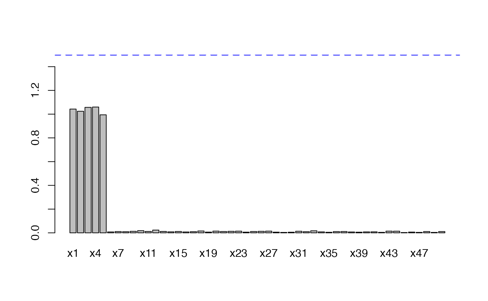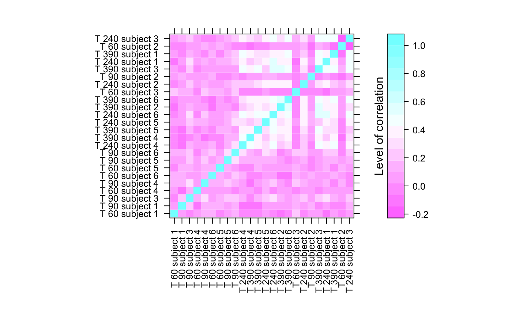
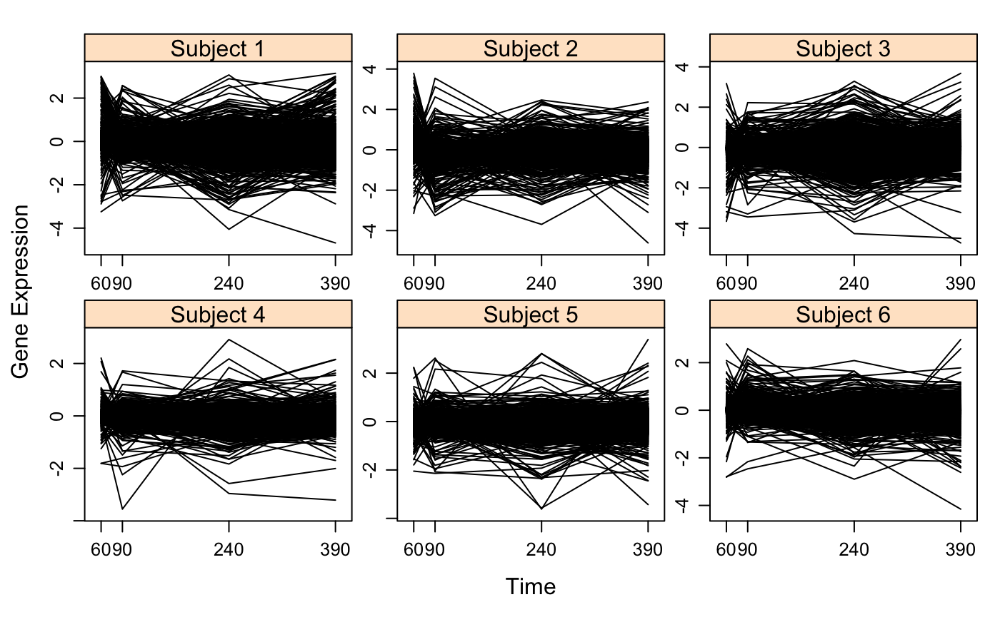
Generates the datasets sampling for each of them 100 probesets expressions among the 1650 that were selected and linking the response to the expressions of the first five probesets.
Here are the plots of an example of correlation structure, namely for DATA_exemple3_nb_200$X.
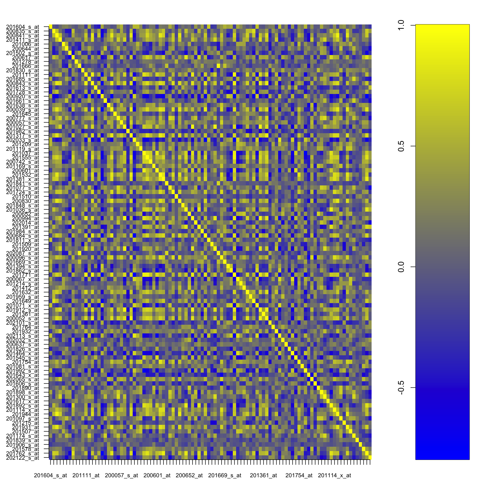
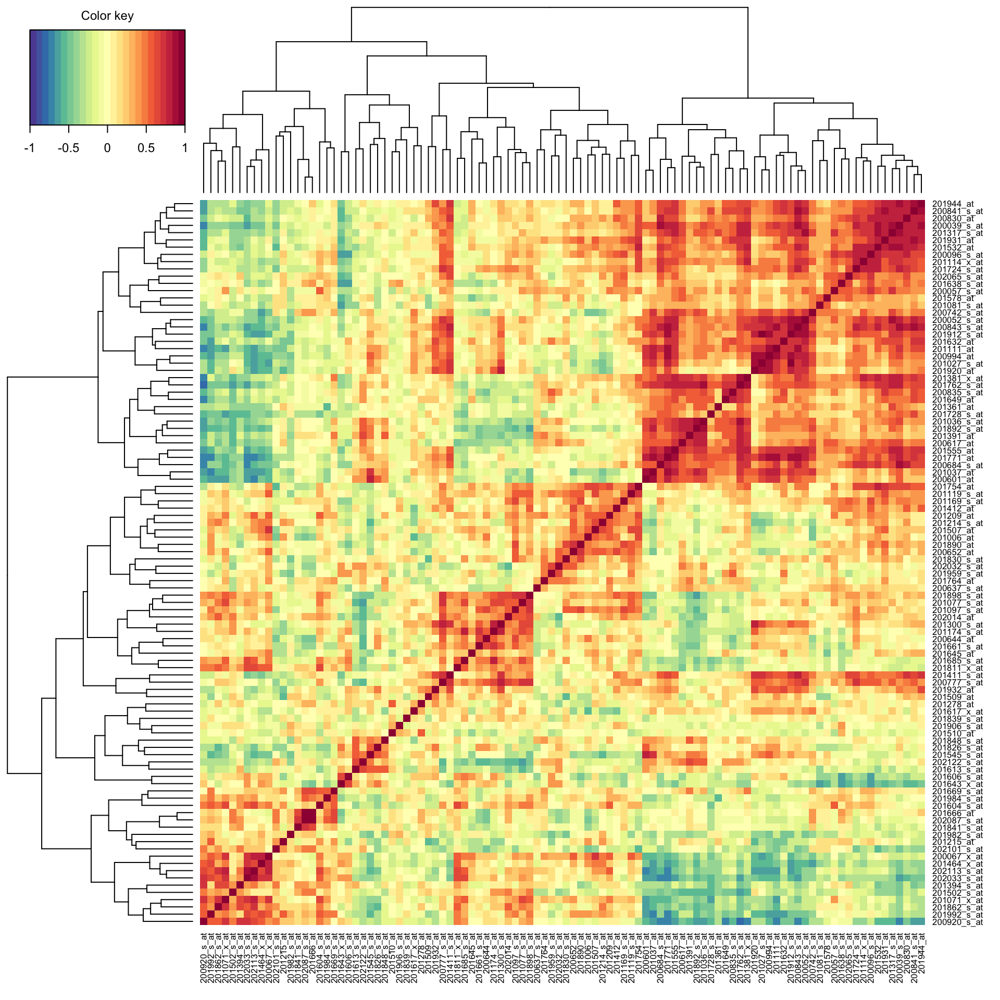
coef_sum=rep(0,length(supp))
coef_lasso_sum=rep(0,length(supp))
names(coef_sum)<-paste("x",1:length(supp),sep="")
names(coef_lasso_sum)<-paste("x",1:length(supp),sep="")
error_counter=0
for(i in 1:NDatasets){
tempdf=data.frame(cbind(Y=get(paste("DATA_exemple3_nb_",i,sep=""))$Y,
get(paste("DATA_exemple3_nb_",i,sep=""))$X))
tempcoef=coef(lm(Y~.-1,data=tempdf))
require(lars)
lasso.1 <- lars::lars(x=get(paste("DATA_exemple3_nb_",i,sep=""))$X,
y=get(paste("DATA_exemple3_nb_",i,sep=""))$Y, type="lasso",
trace=FALSE, normalize=FALSE, intercept = FALSE)
# cv.lars() uses crossvalidation to estimate optimal position in path
cv.lasso.1 <- lars::cv.lars(x=get(paste("DATA_exemple3_nb_",i,sep=""))$X,
y=get(paste("DATA_exemple3_nb_",i,sep=""))$Y,
plot.it=FALSE, normalize=FALSE, intercept = FALSE, type="lasso")
# Use the "+1SE rule" to find best model:
# Take the min CV and add its SE ("limit").
# Find smallest model that has its own CV within this limit (at "s.cv.1")
limit <- min(cv.lasso.1$cv) + cv.lasso.1$cv.error[which.min(cv.lasso.1$cv)]
s.cv.1 <- cv.lasso.1$index[min(which(cv.lasso.1$cv < limit))]
# Print out coefficients at optimal s.
coef_lasso_sum=coef_lasso_sum+abs(coef(lasso.1, s=s.cv.1, mode="fraction"))
if(is.null(tempcoef)){
cat("Error in lm fit, skip coefficients\n")
error_counter=error_counter+1
} else{
coef_sum=coef_sum+abs(tempcoef)
}
}
error_counter
#> [1] 0
coef_mean=coef_sum/NDatasets
coef_lasso_mean=coef_lasso_sum/NDatasetsWith regular least squares and lasso estimators all fits were sucessful, yet only 20 variables coefficients could be estimated with regular least squares estimates for the linear model. Then we display and plot that the mean coefficient vector values for the least squares estimates.
coef_mean
#> x1 x2 x3 x4 x5
#> 1.501658e+00 1.491585e+00 1.534548e+00 1.522715e+00 1.511629e+00
#> x6 x7 x8 x9 x10
#> 2.624549e-14 4.608434e-14 3.550026e-14 3.210486e-14 3.542358e-14
#> x11 x12 x13 x14 x15
#> 2.869408e-14 3.966015e-14 2.230723e-14 7.520949e-14 3.840902e-14
#> x16 x17 x18 x19 x20
#> 7.495801e-14 3.313703e-14 4.944136e-14 2.860247e-14 4.037312e-14
#> x21 x22 x23 x24 x25
#> 7.043877e-14 3.943254e-14 5.286839e-14 4.238572e-14 NA
#> x26 x27 x28 x29 x30
#> NA NA NA NA NA
#> x31 x32 x33 x34 x35
#> NA NA NA NA NA
#> x36 x37 x38 x39 x40
#> NA NA NA NA NA
#> x41 x42 x43 x44 x45
#> NA NA NA NA NA
#> x46 x47 x48 x49 x50
#> NA NA NA NA NA
#> x51 x52 x53 x54 x55
#> NA NA NA NA NA
#> x56 x57 x58 x59 x60
#> NA NA NA NA NA
#> x61 x62 x63 x64 x65
#> NA NA NA NA NA
#> x66 x67 x68 x69 x70
#> NA NA NA NA NA
#> x71 x72 x73 x74 x75
#> NA NA NA NA NA
#> x76 x77 x78 x79 x80
#> NA NA NA NA NA
#> x81 x82 x83 x84 x85
#> NA NA NA NA NA
#> x86 x87 x88 x89 x90
#> NA NA NA NA NA
#> x91 x92 x93 x94 x95
#> NA NA NA NA NA
#> x96 x97 x98 x99 x100
#> NA NA NA NA NA
barplot(coef_mean)
abline(h=(minB+maxB)/2,lwd=2,lty=2,col="blue")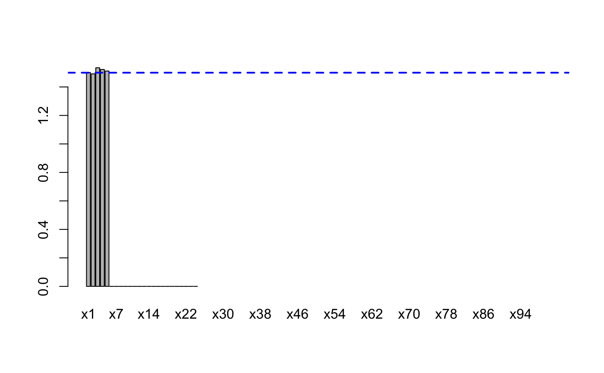
coef_lasso_mean
#> x1 x2 x3 x4 x5 x6
#> 0.725467248 0.736588447 0.757629173 0.778850593 0.759460578 0.023313555
#> x7 x8 x9 x10 x11 x12
#> 0.010584328 0.027035093 0.028712855 0.014620875 0.015099756 0.017231814
#> x13 x14 x15 x16 x17 x18
#> 0.014604397 0.027801891 0.015966838 0.018338899 0.021510447 0.013683420
#> x19 x20 x21 x22 x23 x24
#> 0.010931428 0.017429941 0.026021800 0.017789975 0.012140286 0.021578170
#> x25 x26 x27 x28 x29 x30
#> 0.023189907 0.016008623 0.025580763 0.021452401 0.014109307 0.014783762
#> x31 x32 x33 x34 x35 x36
#> 0.024322728 0.015653647 0.011305903 0.016970461 0.023360732 0.022407182
#> x37 x38 x39 x40 x41 x42
#> 0.007753430 0.011327233 0.021720839 0.009935474 0.023015633 0.012936345
#> x43 x44 x45 x46 x47 x48
#> 0.015693366 0.026615612 0.010664589 0.018989056 0.012891640 0.022357984
#> x49 x50 x51 x52 x53 x54
#> 0.015056362 0.021800685 0.010762423 0.021255999 0.013453485 0.019138590
#> x55 x56 x57 x58 x59 x60
#> 0.015127400 0.015454598 0.014839734 0.019216979 0.017551305 0.010872447
#> x61 x62 x63 x64 x65 x66
#> 0.015210900 0.018948936 0.018948696 0.019033506 0.024637671 0.011010832
#> x67 x68 x69 x70 x71 x72
#> 0.020171886 0.019463645 0.012871427 0.015391142 0.021282438 0.013546175
#> x73 x74 x75 x76 x77 x78
#> 0.015600153 0.026457189 0.006792839 0.019997887 0.025248118 0.017725968
#> x79 x80 x81 x82 x83 x84
#> 0.014160855 0.019077533 0.022472040 0.014450753 0.021721598 0.016675160
#> x85 x86 x87 x88 x89 x90
#> 0.027084835 0.008844269 0.016832882 0.022358191 0.025644246 0.016196235
#> x91 x92 x93 x94 x95 x96
#> 0.024289125 0.017936576 0.020657207 0.011768473 0.021346851 0.022127919
#> x97 x98 x99 x100
#> 0.019947735 0.010399517 0.017528605 0.019819379
barplot(coef_lasso_mean,ylim=c(0,1.5))
abline(h=(minB+maxB)/2,lwd=2,lty=2,col="blue")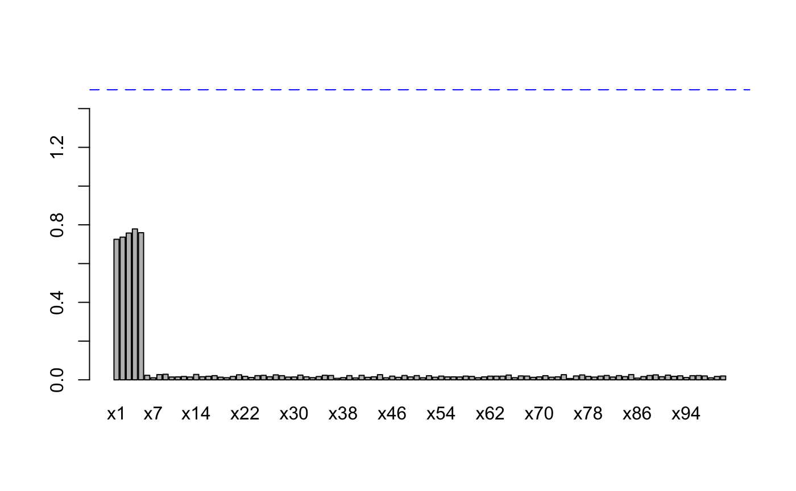
The simulation process looks sucessfull: the lasso estimates retrives mostly the correct variables, yet the other ones are also selected sometimes. What are the confidence indices for those variables?
We want to creates \(NDatasets=101\) datasets with \(\textrm{length}(supp)=100\) variables and \(N=18\) observations. In that example we use real data for the variables that are the \(101\) probesets that are the more differentially expressed between the two conditions US and S. We create \(101\) datasets by leaving one of the variables out each time and using it as the response that shall be predicted. We also only use for the explanatory variables the observations that are the measurements for the 1st, 2nd and 3rd timepoints and for the responses the observations that are the measurements of the same variables for the 2nd, 3rd and 4th timepoints. The main interest of that simulation is that the correlation structure of the X dataset will be a real one and that it is a typical setting for cascade network reverse-engineering in genomics or proteomics, see the Cascade package for more details.
First retrieve the datasets and get the differentially expressed probesets.
require(CascadeData)
data(micro_S)
data(micro_US)
require(Cascade)
micro_US<-as.micro_array(micro_US,c(60,90,240,390),6)
micro_S<-as.micro_array(micro_S,c(60,90,240,390),6)
S<-geneSelection(list(micro_S,micro_US),list("condition",c(1,2),1),101)
Sel<-micro_S@microarray[S@name,]
summary(S)
#> N1_US_T60 N1_US_T90 N1_US_T210
#> Min. :-0.89276 Min. :-0.773190 Min. :-2.079442
#> 1st Qu.:-0.11132 1st Qu.:-0.082888 1st Qu.:-0.283990
#> Median :-0.03030 Median :-0.002073 Median : 0.006005
#> Mean : 0.04941 Mean : 0.015356 Mean :-0.074991
#> 3rd Qu.: 0.08370 3rd Qu.: 0.127301 3rd Qu.: 0.204382
#> Max. : 2.53897 Max. : 0.938891 Max. : 1.155634
#> N1_US_T390 N2_US_T60 N2_US_T90
#> Min. :-1.30745 Min. :-1.6422 Min. :-3.26105
#> 1st Qu.:-0.44631 1st Qu.: 0.1499 1st Qu.:-0.21748
#> Median :-0.10464 Median : 0.3358 Median :-0.12623
#> Mean :-0.03396 Mean : 0.3331 Mean :-0.13730
#> 3rd Qu.: 0.23266 3rd Qu.: 0.5210 3rd Qu.:-0.04215
#> Max. : 2.96588 Max. : 2.7005 Max. : 1.56541
#> N2_US_T210 N2_US_T390 N3_US_T60
#> Min. :-2.55852 Min. :-2.71910 Min. :-2.37749
#> 1st Qu.:-0.16896 1st Qu.:-0.31993 1st Qu.:-0.18448
#> Median : 0.01873 Median :-0.02216 Median :-0.06051
#> Mean :-0.01445 Mean :-0.08521 Mean :-0.06439
#> 3rd Qu.: 0.16535 3rd Qu.: 0.18161 3rd Qu.: 0.08545
#> Max. : 1.16299 Max. : 0.95946 Max. : 1.00636
#> N3_US_T90 N3_US_T210 N3_US_T390
#> Min. :-0.76029 Min. :-1.9716 Min. :-3.225327
#> 1st Qu.:-0.03858 1st Qu.:-0.6713 1st Qu.:-0.258856
#> Median : 0.03977 Median :-0.1636 Median :-0.017611
#> Mean : 0.03449 Mean :-0.2324 Mean :-0.004301
#> 3rd Qu.: 0.14177 3rd Qu.: 0.2057 3rd Qu.: 0.287566
#> Max. : 0.52193 Max. : 1.3350 Max. : 3.679747
#> N4_US_T60 N4_US_T90 N4_US_T210
#> Min. :-0.376767 Min. :-0.52425 Min. :-1.38629
#> 1st Qu.:-0.095907 1st Qu.:-0.01274 1st Qu.:-0.23321
#> Median :-0.032177 Median : 0.07226 Median :-0.12920
#> Mean :-0.007576 Mean : 0.06410 Mean :-0.12071
#> 3rd Qu.: 0.024612 3rd Qu.: 0.15332 3rd Qu.: 0.02794
#> Max. : 0.734820 Max. : 0.52910 Max. : 0.57303
#> N4_US_T390 N5_US_T60 N5_US_T90
#> Min. :-0.65678 Min. :-0.92734 Min. :-2.025374
#> 1st Qu.:-0.19730 1st Qu.:-0.03818 1st Qu.:-0.080528
#> Median :-0.05158 Median : 0.05680 Median : 0.004812
#> Mean :-0.07142 Mean : 0.01675 Mean :-0.025334
#> 3rd Qu.: 0.07118 3rd Qu.: 0.14034 3rd Qu.: 0.055367
#> Max. : 0.74194 Max. : 0.35555 Max. : 1.193922
#> N5_US_T210 N5_US_T390 N6_US_T60
#> Min. :-0.87925 Min. :-1.791759 Min. :-1.30077
#> 1st Qu.:-0.23615 1st Qu.:-0.167992 1st Qu.:-0.03809
#> Median :-0.08791 Median : 0.001692 Median : 0.01202
#> Mean :-0.04003 Mean :-0.008130 Mean : 0.02745
#> 3rd Qu.: 0.11900 3rd Qu.: 0.165985 3rd Qu.: 0.08639
#> Max. : 2.80103 Max. : 2.280781 Max. : 1.29689
#> N6_US_T90 N6_US_T210 N6_US_T390
#> Min. :-0.606136 Min. :-1.96944 Min. :-0.835295
#> 1st Qu.:-0.096129 1st Qu.:-0.17553 1st Qu.:-0.282883
#> Median : 0.003016 Median :-0.00207 Median : 0.002766
#> Mean : 0.023406 Mean :-0.01794 Mean :-0.046176
#> 3rd Qu.: 0.072245 3rd Qu.: 0.20799 3rd Qu.: 0.186650
#> Max. : 0.971099 Max. : 0.96286 Max. : 1.098612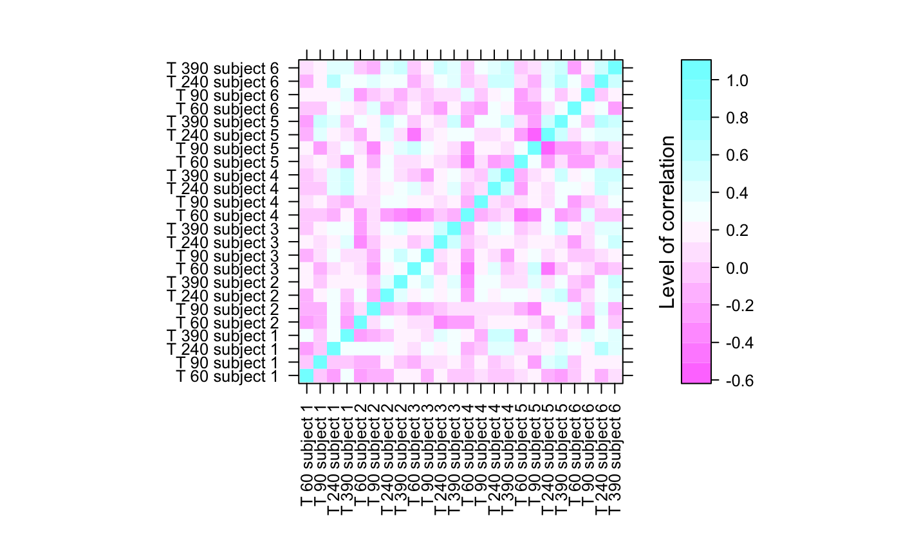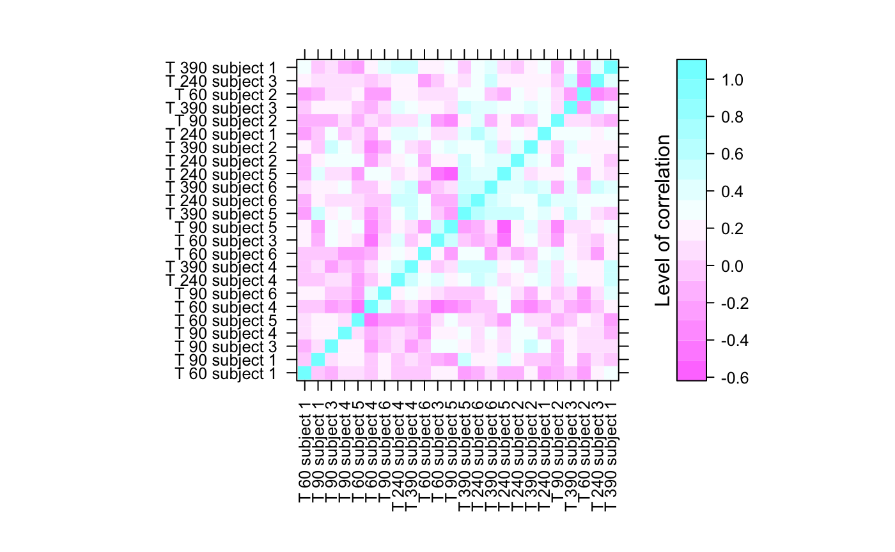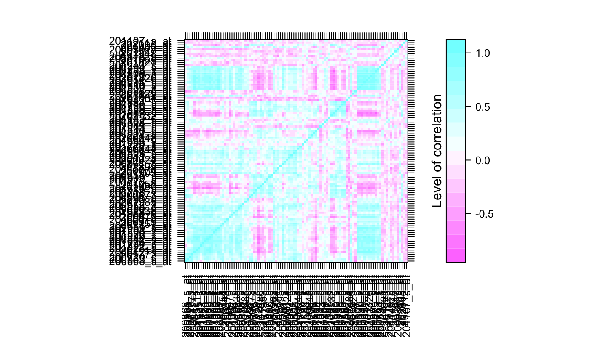
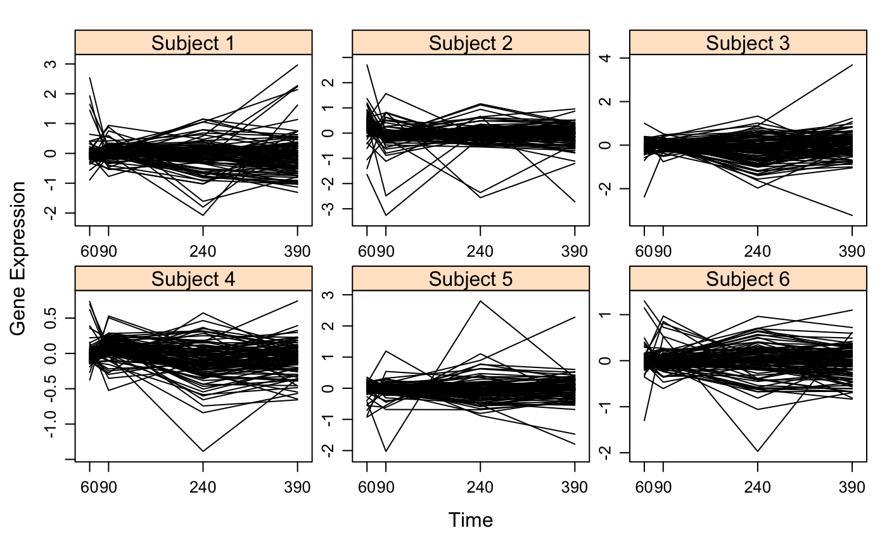
suppt<-rep(1:4,6)
supp<-c(1,1,1,1,1,rep(0,95)) #not used since we use one of the probeset expressions as response
minB<-1 #not used since we use one of the probeset expressions as response
maxB<-2 #not used since we use one of the probeset expressions as response
stn<-50 #not used since we use one of the probeset expressions as response
NDatasets<-101
set.seed(3141)
for(i in 1:NDatasets){
#the explanatory variables are the values for the 1st, 2nd and 3rd timepoints
X<-t(as.matrix(Sel[-i,suppt!=4]))
Xnorm<-t(t(X)/sqrt(colSums(X*X)))
DATA<-simulation_DATA(Xnorm,supp,minB,maxB,stn)
#the reponses are the values for the 2nd, 3rd and 4th timepoints
DATA$Y<-as.vector(t(Sel[i,suppt!=1]))
assign(paste("DATA_exemple4_nb_",i,sep=""),DATA)
rm(DATA)
}Here are the plots of an example of correlation structure, namely for DATA_exemple3_nb_200$X.
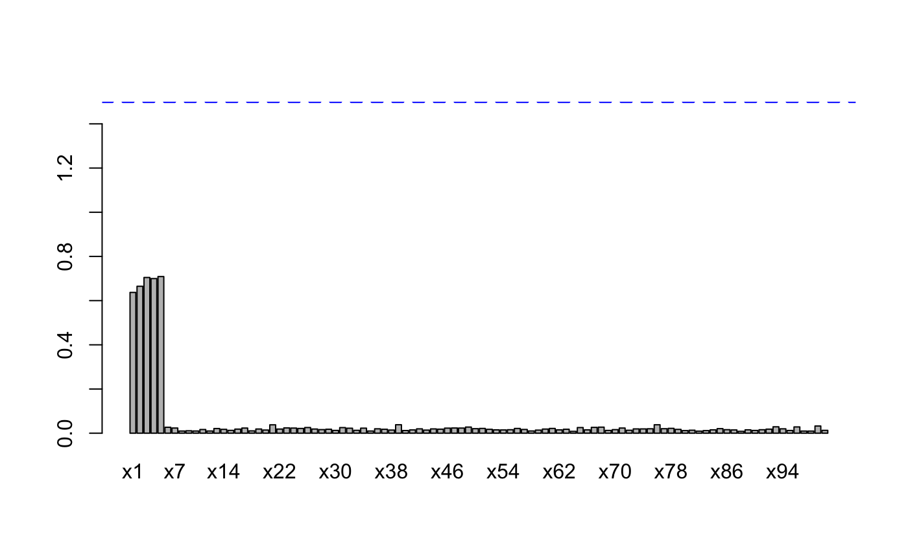
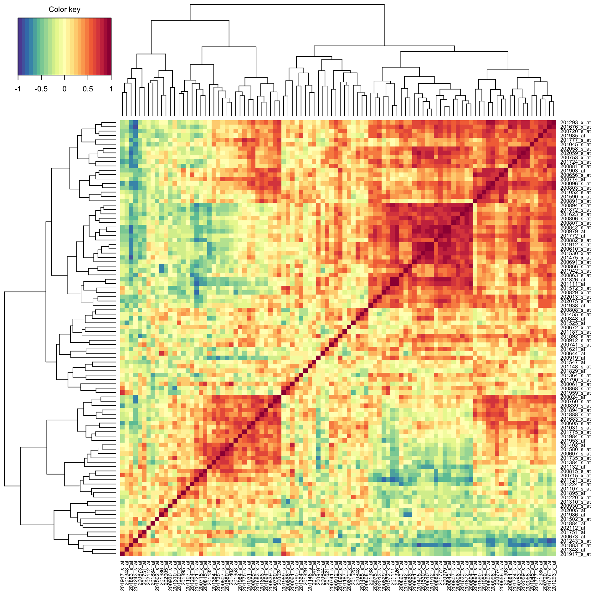
coef_sum=rep(0,length(supp)+1)
coef_lasso_sum=rep(0,length(supp)+1)
names(coef_sum)<-paste("x",1:(length(supp)+1),sep="")
names(coef_lasso_sum)<-paste("x",1:(length(supp)+1),sep="")
error_counter=0
for(i in 1:NDatasets){
tempdf=data.frame(cbind(Y=get(paste("DATA_exemple4_nb_",i,sep=""))$Y,
get(paste("DATA_exemple4_nb_",i,sep=""))$X))
tempcoef=coef(lm(Y~.-1,data=tempdf))
require(lars)
lasso.1 <- lars::lars(x=get(paste("DATA_exemple4_nb_",i,sep=""))$X,
y=get(paste("DATA_exemple4_nb_",i,sep=""))$Y, type="lasso",
trace=FALSE, normalize=FALSE, intercept = FALSE)
# cv.lars() uses crossvalidation to estimate optimal position in path
cv.lasso.1 <- lars::cv.lars(x=get(paste("DATA_exemple4_nb_",i,sep=""))$X,
y=get(paste("DATA_exemple4_nb_",i,sep=""))$Y,
plot.it=FALSE, normalize=FALSE, intercept = FALSE, type="lasso")
# Use the "+1SE rule" to find best model:
# Take the min CV and add its SE ("limit").
# Find smallest model that has its own CV within this limit (at "s.cv.1")
limit <- min(cv.lasso.1$cv) + cv.lasso.1$cv.error[which.min(cv.lasso.1$cv)]
s.cv.1 <- cv.lasso.1$index[min(which(cv.lasso.1$cv < limit))]
# Print out coefficients at optimal s.
coef_lasso_sum[-i]=coef_lasso_sum[-i]+abs(coef(lasso.1, s=s.cv.1, mode="fraction"))
if(is.null(tempcoef)){
cat("Error in lm fit, skip coefficients\n")
error_counter=error_counter+1
} else{
coef_sum[-i]=coef_sum[-i]+abs(tempcoef)
}
}
error_counter
#> [1] 0
coef_mean=coef_sum/NDatasets
coef_lasso_mean=coef_lasso_sum/NDatasetsWith regular least squares and lasso estimators all fits were sucessful, yet only 20 variables coefficients could be estimated with regular least squares estimates for the linear model. Then we display and plot that the mean coefficient vector values for the least squares estimates.
coef_mean
#> x1 x2 x3 x4 x5 x6
#> 14349.4269 8154.5511 14420.0396 5840.7360 15688.8442 12563.4724
#> x7 x8 x9 x10 x11 x12
#> 603.4098 8310.8567 13063.4258 9127.8669 6589.8195 6108.8444
#> x13 x14 x15 x16 x17 x18
#> 17045.1586 1160.3101 13911.5637 1626.6271 7104.9765 22361.0928
#> x19 x20 x21 x22 x23 x24
#> NA NA NA NA NA NA
#> x25 x26 x27 x28 x29 x30
#> NA NA NA NA NA NA
#> x31 x32 x33 x34 x35 x36
#> NA NA NA NA NA NA
#> x37 x38 x39 x40 x41 x42
#> NA NA NA NA NA NA
#> x43 x44 x45 x46 x47 x48
#> NA NA NA NA NA NA
#> x49 x50 x51 x52 x53 x54
#> NA NA NA NA NA NA
#> x55 x56 x57 x58 x59 x60
#> NA NA NA NA NA NA
#> x61 x62 x63 x64 x65 x66
#> NA NA NA NA NA NA
#> x67 x68 x69 x70 x71 x72
#> NA NA NA NA NA NA
#> x73 x74 x75 x76 x77 x78
#> NA NA NA NA NA NA
#> x79 x80 x81 x82 x83 x84
#> NA NA NA NA NA NA
#> x85 x86 x87 x88 x89 x90
#> NA NA NA NA NA NA
#> x91 x92 x93 x94 x95 x96
#> NA NA NA NA NA NA
#> x97 x98 x99 x100 x101
#> NA NA NA NA NA
barplot(coef_mean)
abline(h=(minB+maxB)/2,lwd=2,lty=2,col="blue")coef_lasso_mean
#> x1 x2 x3 x4 x5 x6
#> 34.1504603 5.2295703 16.0580418 22.5403179 0.0000000 5.6362939
#> x7 x8 x9 x10 x11 x12
#> 79.4055345 2.1769133 0.0000000 5.6261241 13.2812293 3.6692784
#> x13 x14 x15 x16 x17 x18
#> 0.1028558 49.0576280 0.0000000 69.8242035 0.5811578 7.9486446
#> x19 x20 x21 x22 x23 x24
#> 3.8336803 0.7873400 0.0000000 10.6088266 1.0496033 16.0519509
#> x25 x26 x27 x28 x29 x30
#> 7.4600895 0.7876123 53.5049108 1.0376747 26.1218414 1.2841470
#> x31 x32 x33 x34 x35 x36
#> 185.3155279 48.2326971 0.0000000 1.4045820 35.4478409 8.6865785
#> x37 x38 x39 x40 x41 x42
#> 132.1076764 14.1994829 10.2714212 0.1735742 0.0000000 106.1815426
#> x43 x44 x45 x46 x47 x48
#> 25.8901378 0.2626190 53.9414390 11.9194494 1.1852541 20.7142474
#> x49 x50 x51 x52 x53 x54
#> 0.0000000 40.0453376 38.6999328 1.6672213 88.4485257 0.1891424
#> x55 x56 x57 x58 x59 x60
#> 70.6141345 0.3899913 69.4407836 0.0000000 128.4853512 46.3457980
#> x61 x62 x63 x64 x65 x66
#> 42.2754601 157.5271831 7.8330356 45.9190285 0.0000000 15.1299956
#> x67 x68 x69 x70 x71 x72
#> 0.0732220 0.0000000 34.0048887 10.9746506 0.0000000 83.6781253
#> x73 x74 x75 x76 x77 x78
#> 0.0000000 65.4600101 0.0000000 4.8108369 6.6390045 51.9617069
#> x79 x80 x81 x82 x83 x84
#> 0.0000000 44.8637916 40.6399803 81.6186745 115.1664178 187.7889433
#> x85 x86 x87 x88 x89 x90
#> 12.6215228 3.7075067 34.6494263 87.5871756 19.5481442 0.0000000
#> x91 x92 x93 x94 x95 x96
#> 37.5572698 7.6228246 12.3126556 43.4391316 8.0776320 0.5393882
#> x97 x98 x99 x100 x101
#> 11.3428544 40.3550817 2.3701894 18.8452724 9.3627109
barplot(coef_lasso_mean)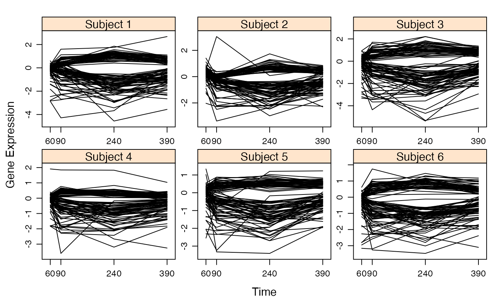
Some probesets seem explanatory for many other ones (=hubs). What are the confidence indices for those variables?
We want to creates \(NDatasets=200\) datasets with \(\textrm{length}(group)=500\) variables and \(N=25\) observations. In that example we want \(1\) group:
We now check the correlation structure of the explanatory variable. First we compute the mean correlation matrix.
corr_sum=matrix(0,length(group),length(group))
for(i in 1:NDatasets){
corr_sum=corr_sum+cor(get(paste("DATA_exemple5_nb_",i,sep=""))$X)
}
corr_mean=corr_sum/NDatasetsThen we display and plot that the mean correlation matrix.
corr_mean[1:6,1:6]
#> [,1] [,2] [,3] [,4] [,5] [,6]
#> [1,] 1.0000000 0.4684444 0.4944331 0.4628645 0.4961487 0.4956996
#> [2,] 0.4684444 1.0000000 0.5102506 0.5026134 0.4960774 0.4948349
#> [3,] 0.4944331 0.5102506 1.0000000 0.4853991 0.4907725 0.5089649
#> [4,] 0.4628645 0.5026134 0.4853991 1.0000000 0.4670240 0.4837113
#> [5,] 0.4961487 0.4960774 0.4907725 0.4670240 1.0000000 0.4932811
#> [6,] 0.4956996 0.4948349 0.5089649 0.4837113 0.4932811 1.0000000
plot(abs(corr_mean))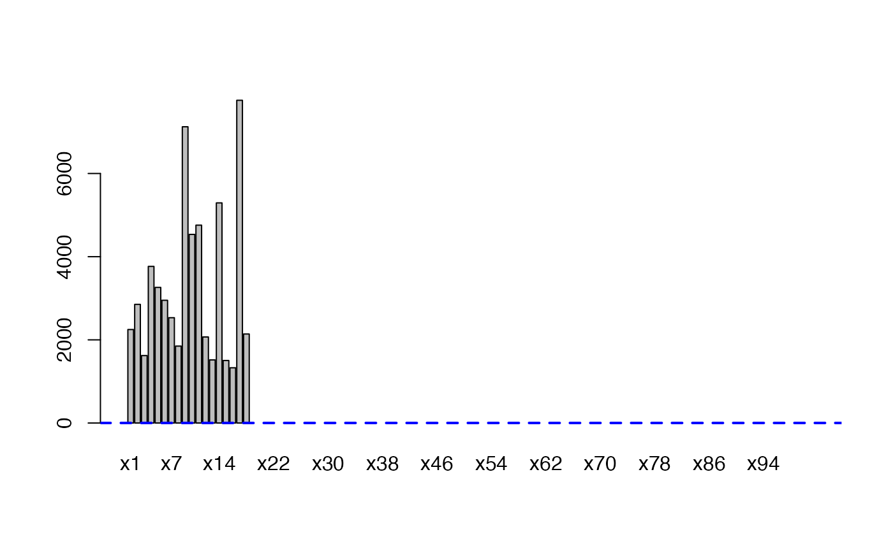
coef_sum=rep(0,length(group))
coef_lasso_sum=rep(0,length(group))
names(coef_sum)<-paste("x",1:length(group),sep="")
names(coef_lasso_sum)<-paste("x",1:length(group),sep="")
error_counter=0
for(i in 1:NDatasets){
tempdf=data.frame(cbind(Y=get(paste("DATA_exemple5_nb_",i,sep=""))$Y,
get(paste("DATA_exemple5_nb_",i,sep=""))$X))
tempcoef=coef(lm(Y~.-1,data=tempdf))
require(lars)
lasso.1 <- lars::lars(x=get(paste("DATA_exemple5_nb_",i,sep=""))$X,
y=get(paste("DATA_exemple5_nb_",i,sep=""))$Y, type="lasso",
trace=FALSE, normalize=FALSE, intercept = FALSE)
# cv.lars() uses crossvalidation to estimate optimal position in path
cv.lasso.1 <- lars::cv.lars(x=get(paste("DATA_exemple5_nb_",i,sep=""))$X,
y=get(paste("DATA_exemple5_nb_",i,sep=""))$Y,
plot.it=FALSE, type="lasso")
# Use the "+1SE rule" to find best model:
# Take the min CV and add its SE ("limit").
# Find smallest model that has its own CV within this limit (at "s.cv.1")
limit <- min(cv.lasso.1$cv) + cv.lasso.1$cv.error[which.min(cv.lasso.1$cv)]
s.cv.1 <- cv.lasso.1$index[min(which(cv.lasso.1$cv < limit))]
# Print out coefficients at optimal s.
coef_lasso_sum=coef_lasso_sum+abs(coef(lasso.1, s=s.cv.1, mode="fraction"))
if(is.null(tempcoef)){
cat("Error in lm fit, skip coefficients\n")
error_counter=error_counter+1
} else{
coef_sum=coef_sum+abs(tempcoef)
}
}
error_counter
#> [1] 0
coef_mean=coef_sum/NDatasets
coef_lasso_mean=coef_lasso_sum/NDatasetsWith regular least squares and lasso estimators all fits were sucessful, yet only 20 variables coefficients could be estimated with regular least squares estimates for the linear model. Then we display and plot that the mean coefficient vector values for the least squares estimates.
coef_mean
#> x1 x2 x3 x4 x5
#> 1.503770e+00 1.535116e+00 1.484148e+00 1.509255e+00 1.514028e+00
#> x6 x7 x8 x9 x10
#> 3.173485e-15 3.037102e-15 2.889551e-15 3.154865e-15 7.183429e-15
#> x11 x12 x13 x14 x15
#> 3.394267e-15 2.841336e-15 3.716311e-15 3.182421e-15 3.427576e-15
#> x16 x17 x18 x19 x20
#> 3.919400e-15 4.673144e-15 3.955783e-15 3.303872e-15 5.303571e-15
#> x21 x22 x23 x24 x25
#> 5.550495e-15 3.081008e-15 2.254520e-15 3.381582e-15 3.730642e-15
#> x26 x27 x28 x29 x30
#> NA NA NA NA NA
#> x31 x32 x33 x34 x35
#> NA NA NA NA NA
#> x36 x37 x38 x39 x40
#> NA NA NA NA NA
#> x41 x42 x43 x44 x45
#> NA NA NA NA NA
#> x46 x47 x48 x49 x50
#> NA NA NA NA NA
#> x51 x52 x53 x54 x55
#> NA NA NA NA NA
#> x56 x57 x58 x59 x60
#> NA NA NA NA NA
#> x61 x62 x63 x64 x65
#> NA NA NA NA NA
#> x66 x67 x68 x69 x70
#> NA NA NA NA NA
#> x71 x72 x73 x74 x75
#> NA NA NA NA NA
#> x76 x77 x78 x79 x80
#> NA NA NA NA NA
#> x81 x82 x83 x84 x85
#> NA NA NA NA NA
#> x86 x87 x88 x89 x90
#> NA NA NA NA NA
#> x91 x92 x93 x94 x95
#> NA NA NA NA NA
#> x96 x97 x98 x99 x100
#> NA NA NA NA NA
#> x101 x102 x103 x104 x105
#> NA NA NA NA NA
#> x106 x107 x108 x109 x110
#> NA NA NA NA NA
#> x111 x112 x113 x114 x115
#> NA NA NA NA NA
#> x116 x117 x118 x119 x120
#> NA NA NA NA NA
#> x121 x122 x123 x124 x125
#> NA NA NA NA NA
#> x126 x127 x128 x129 x130
#> NA NA NA NA NA
#> x131 x132 x133 x134 x135
#> NA NA NA NA NA
#> x136 x137 x138 x139 x140
#> NA NA NA NA NA
#> x141 x142 x143 x144 x145
#> NA NA NA NA NA
#> x146 x147 x148 x149 x150
#> NA NA NA NA NA
#> x151 x152 x153 x154 x155
#> NA NA NA NA NA
#> x156 x157 x158 x159 x160
#> NA NA NA NA NA
#> x161 x162 x163 x164 x165
#> NA NA NA NA NA
#> x166 x167 x168 x169 x170
#> NA NA NA NA NA
#> x171 x172 x173 x174 x175
#> NA NA NA NA NA
#> x176 x177 x178 x179 x180
#> NA NA NA NA NA
#> x181 x182 x183 x184 x185
#> NA NA NA NA NA
#> x186 x187 x188 x189 x190
#> NA NA NA NA NA
#> x191 x192 x193 x194 x195
#> NA NA NA NA NA
#> x196 x197 x198 x199 x200
#> NA NA NA NA NA
#> x201 x202 x203 x204 x205
#> NA NA NA NA NA
#> x206 x207 x208 x209 x210
#> NA NA NA NA NA
#> x211 x212 x213 x214 x215
#> NA NA NA NA NA
#> x216 x217 x218 x219 x220
#> NA NA NA NA NA
#> x221 x222 x223 x224 x225
#> NA NA NA NA NA
#> x226 x227 x228 x229 x230
#> NA NA NA NA NA
#> x231 x232 x233 x234 x235
#> NA NA NA NA NA
#> x236 x237 x238 x239 x240
#> NA NA NA NA NA
#> x241 x242 x243 x244 x245
#> NA NA NA NA NA
#> x246 x247 x248 x249 x250
#> NA NA NA NA NA
#> x251 x252 x253 x254 x255
#> NA NA NA NA NA
#> x256 x257 x258 x259 x260
#> NA NA NA NA NA
#> x261 x262 x263 x264 x265
#> NA NA NA NA NA
#> x266 x267 x268 x269 x270
#> NA NA NA NA NA
#> x271 x272 x273 x274 x275
#> NA NA NA NA NA
#> x276 x277 x278 x279 x280
#> NA NA NA NA NA
#> x281 x282 x283 x284 x285
#> NA NA NA NA NA
#> x286 x287 x288 x289 x290
#> NA NA NA NA NA
#> x291 x292 x293 x294 x295
#> NA NA NA NA NA
#> x296 x297 x298 x299 x300
#> NA NA NA NA NA
#> x301 x302 x303 x304 x305
#> NA NA NA NA NA
#> x306 x307 x308 x309 x310
#> NA NA NA NA NA
#> x311 x312 x313 x314 x315
#> NA NA NA NA NA
#> x316 x317 x318 x319 x320
#> NA NA NA NA NA
#> x321 x322 x323 x324 x325
#> NA NA NA NA NA
#> x326 x327 x328 x329 x330
#> NA NA NA NA NA
#> x331 x332 x333 x334 x335
#> NA NA NA NA NA
#> x336 x337 x338 x339 x340
#> NA NA NA NA NA
#> x341 x342 x343 x344 x345
#> NA NA NA NA NA
#> x346 x347 x348 x349 x350
#> NA NA NA NA NA
#> x351 x352 x353 x354 x355
#> NA NA NA NA NA
#> x356 x357 x358 x359 x360
#> NA NA NA NA NA
#> x361 x362 x363 x364 x365
#> NA NA NA NA NA
#> x366 x367 x368 x369 x370
#> NA NA NA NA NA
#> x371 x372 x373 x374 x375
#> NA NA NA NA NA
#> x376 x377 x378 x379 x380
#> NA NA NA NA NA
#> x381 x382 x383 x384 x385
#> NA NA NA NA NA
#> x386 x387 x388 x389 x390
#> NA NA NA NA NA
#> x391 x392 x393 x394 x395
#> NA NA NA NA NA
#> x396 x397 x398 x399 x400
#> NA NA NA NA NA
#> x401 x402 x403 x404 x405
#> NA NA NA NA NA
#> x406 x407 x408 x409 x410
#> NA NA NA NA NA
#> x411 x412 x413 x414 x415
#> NA NA NA NA NA
#> x416 x417 x418 x419 x420
#> NA NA NA NA NA
#> x421 x422 x423 x424 x425
#> NA NA NA NA NA
#> x426 x427 x428 x429 x430
#> NA NA NA NA NA
#> x431 x432 x433 x434 x435
#> NA NA NA NA NA
#> x436 x437 x438 x439 x440
#> NA NA NA NA NA
#> x441 x442 x443 x444 x445
#> NA NA NA NA NA
#> x446 x447 x448 x449 x450
#> NA NA NA NA NA
#> x451 x452 x453 x454 x455
#> NA NA NA NA NA
#> x456 x457 x458 x459 x460
#> NA NA NA NA NA
#> x461 x462 x463 x464 x465
#> NA NA NA NA NA
#> x466 x467 x468 x469 x470
#> NA NA NA NA NA
#> x471 x472 x473 x474 x475
#> NA NA NA NA NA
#> x476 x477 x478 x479 x480
#> NA NA NA NA NA
#> x481 x482 x483 x484 x485
#> NA NA NA NA NA
#> x486 x487 x488 x489 x490
#> NA NA NA NA NA
#> x491 x492 x493 x494 x495
#> NA NA NA NA NA
#> x496 x497 x498 x499 x500
#> NA NA NA NA NA
barplot(coef_mean)
abline(h=(minB+maxB)/2,lwd=2,lty=2,col="blue")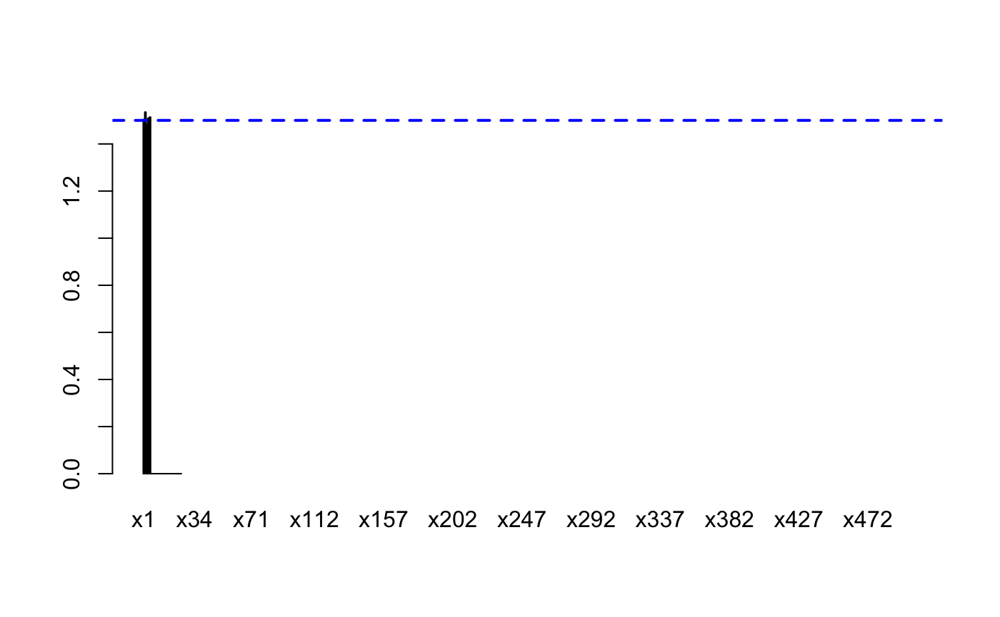
coef_lasso_mean
#> x1 x2 x3 x4 x5
#> 2.884748e-01 2.901325e-01 2.551364e-01 2.539998e-01 2.806796e-01
#> x6 x7 x8 x9 x10
#> 1.054459e-03 1.150511e-02 3.461256e-03 0.000000e+00 5.735264e-03
#> x11 x12 x13 x14 x15
#> 8.909294e-04 8.091381e-03 4.200223e-03 6.154204e-03 3.300430e-03
#> x16 x17 x18 x19 x20
#> 0.000000e+00 7.378325e-04 1.474426e-03 7.912583e-04 0.000000e+00
#> x21 x22 x23 x24 x25
#> 3.561937e-03 1.344935e-02 2.796454e-03 0.000000e+00 0.000000e+00
#> x26 x27 x28 x29 x30
#> 6.596085e-03 1.182465e-03 0.000000e+00 0.000000e+00 5.313226e-04
#> x31 x32 x33 x34 x35
#> 2.671555e-03 9.870718e-04 0.000000e+00 4.098509e-03 0.000000e+00
#> x36 x37 x38 x39 x40
#> 6.317726e-03 1.714907e-03 5.818642e-03 1.806977e-04 4.823576e-03
#> x41 x42 x43 x44 x45
#> 0.000000e+00 5.894325e-03 3.464169e-03 1.929152e-03 3.145499e-03
#> x46 x47 x48 x49 x50
#> 2.519983e-03 5.473620e-03 1.638998e-02 1.143931e-03 1.095974e-03
#> x51 x52 x53 x54 x55
#> 1.664955e-04 0.000000e+00 6.398671e-03 0.000000e+00 4.706701e-04
#> x56 x57 x58 x59 x60
#> 9.093795e-03 0.000000e+00 0.000000e+00 8.643983e-03 2.067534e-03
#> x61 x62 x63 x64 x65
#> 2.135915e-04 1.844471e-03 0.000000e+00 0.000000e+00 3.752576e-03
#> x66 x67 x68 x69 x70
#> 4.890721e-03 0.000000e+00 6.039112e-04 1.868299e-03 1.018851e-03
#> x71 x72 x73 x74 x75
#> 1.646374e-03 2.403692e-03 6.026804e-03 6.962014e-03 0.000000e+00
#> x76 x77 x78 x79 x80
#> 2.306817e-04 3.839730e-03 9.217950e-03 6.012937e-04 0.000000e+00
#> x81 x82 x83 x84 x85
#> 6.979286e-03 0.000000e+00 0.000000e+00 2.401911e-03 4.909802e-03
#> x86 x87 x88 x89 x90
#> 1.655423e-03 0.000000e+00 2.884180e-03 0.000000e+00 0.000000e+00
#> x91 x92 x93 x94 x95
#> 2.372380e-03 3.029237e-03 2.877922e-03 2.744042e-03 1.640034e-03
#> x96 x97 x98 x99 x100
#> 0.000000e+00 0.000000e+00 2.196352e-03 0.000000e+00 2.884404e-03
#> x101 x102 x103 x104 x105
#> 2.545251e-04 8.404968e-04 8.677094e-04 0.000000e+00 0.000000e+00
#> x106 x107 x108 x109 x110
#> 1.300548e-03 1.093227e-02 3.595613e-13 2.942981e-04 1.054983e-03
#> x111 x112 x113 x114 x115
#> 7.851609e-03 8.393156e-03 6.675603e-05 3.756990e-03 0.000000e+00
#> x116 x117 x118 x119 x120
#> 9.512716e-03 0.000000e+00 3.465779e-03 0.000000e+00 0.000000e+00
#> x121 x122 x123 x124 x125
#> 6.053096e-03 1.680116e-03 3.157865e-03 1.803751e-03 1.963759e-04
#> x126 x127 x128 x129 x130
#> 8.011495e-03 3.091165e-03 9.283627e-03 7.783758e-03 7.388000e-04
#> x131 x132 x133 x134 x135
#> 1.482911e-03 5.401912e-03 1.106355e-03 0.000000e+00 3.738097e-13
#> x136 x137 x138 x139 x140
#> 1.062713e-03 2.754979e-03 4.499225e-03 0.000000e+00 8.640881e-05
#> x141 x142 x143 x144 x145
#> 4.836961e-03 0.000000e+00 2.244729e-03 1.080932e-03 4.709850e-03
#> x146 x147 x148 x149 x150
#> 8.922725e-05 4.335968e-03 0.000000e+00 7.932872e-03 1.552719e-03
#> x151 x152 x153 x154 x155
#> 3.009082e-03 1.209795e-02 1.155424e-02 3.562763e-03 1.182077e-02
#> x156 x157 x158 x159 x160
#> 2.588609e-03 3.805900e-03 6.526799e-03 0.000000e+00 4.724274e-03
#> x161 x162 x163 x164 x165
#> 1.897259e-03 6.222351e-03 7.134727e-04 6.424847e-05 3.489814e-03
#> x166 x167 x168 x169 x170
#> 1.465465e-03 6.930260e-04 2.519993e-03 1.600021e-03 7.287719e-04
#> x171 x172 x173 x174 x175
#> 2.185756e-03 8.390096e-03 4.392137e-03 0.000000e+00 0.000000e+00
#> x176 x177 x178 x179 x180
#> 4.338646e-03 3.698217e-04 7.418248e-04 3.251755e-04 2.408658e-13
#> x181 x182 x183 x184 x185
#> 0.000000e+00 1.398158e-04 7.723147e-03 8.171550e-03 4.621357e-03
#> x186 x187 x188 x189 x190
#> 0.000000e+00 6.432805e-04 2.641452e-03 2.063362e-03 0.000000e+00
#> x191 x192 x193 x194 x195
#> 8.864699e-04 0.000000e+00 5.742162e-04 3.066370e-03 1.541211e-03
#> x196 x197 x198 x199 x200
#> 0.000000e+00 0.000000e+00 0.000000e+00 0.000000e+00 9.127545e-03
#> x201 x202 x203 x204 x205
#> 6.666864e-03 0.000000e+00 1.377348e-03 1.314059e-03 0.000000e+00
#> x206 x207 x208 x209 x210
#> 2.648338e-03 2.355800e-03 1.921164e-03 2.659421e-03 5.426419e-03
#> x211 x212 x213 x214 x215
#> 1.665848e-03 8.335670e-03 1.361967e-03 1.873715e-04 3.852283e-03
#> x216 x217 x218 x219 x220
#> 0.000000e+00 5.219588e-03 4.769629e-03 3.414312e-03 0.000000e+00
#> x221 x222 x223 x224 x225
#> 5.870329e-03 1.983912e-04 0.000000e+00 2.510588e-03 2.621387e-04
#> x226 x227 x228 x229 x230
#> 5.005981e-03 1.661935e-03 1.964637e-03 0.000000e+00 4.189824e-03
#> x231 x232 x233 x234 x235
#> 0.000000e+00 5.055007e-03 1.051940e-04 2.391811e-03 0.000000e+00
#> x236 x237 x238 x239 x240
#> 4.570089e-03 1.648793e-03 4.599661e-03 6.718207e-03 2.623970e-03
#> x241 x242 x243 x244 x245
#> 5.617679e-03 3.835205e-03 0.000000e+00 1.097162e-04 0.000000e+00
#> x246 x247 x248 x249 x250
#> 1.740902e-03 6.710349e-03 9.648295e-03 0.000000e+00 2.424279e-03
#> x251 x252 x253 x254 x255
#> 4.392212e-13 0.000000e+00 2.415739e-03 2.856605e-03 1.950805e-03
#> x256 x257 x258 x259 x260
#> 6.416515e-03 0.000000e+00 3.540890e-03 9.224404e-04 4.945168e-03
#> x261 x262 x263 x264 x265
#> 3.018154e-03 0.000000e+00 6.590549e-03 1.661707e-04 2.177644e-03
#> x266 x267 x268 x269 x270
#> 4.040275e-03 5.836884e-03 1.007461e-02 0.000000e+00 1.171146e-04
#> x271 x272 x273 x274 x275
#> 4.767406e-03 8.748554e-04 2.193023e-03 1.677024e-03 5.337584e-04
#> x276 x277 x278 x279 x280
#> 1.167369e-03 2.210347e-03 4.923696e-03 5.596199e-03 4.658485e-03
#> x281 x282 x283 x284 x285
#> 4.262348e-04 1.064898e-03 0.000000e+00 0.000000e+00 4.156769e-03
#> x286 x287 x288 x289 x290
#> 0.000000e+00 5.161943e-04 4.830806e-04 1.824153e-03 2.504789e-03
#> x291 x292 x293 x294 x295
#> 5.602760e-03 1.967933e-03 5.196217e-04 0.000000e+00 0.000000e+00
#> x296 x297 x298 x299 x300
#> 1.040225e-02 5.716943e-04 1.916809e-03 1.409348e-03 4.122752e-03
#> x301 x302 x303 x304 x305
#> 1.800248e-03 0.000000e+00 1.251882e-03 1.324179e-02 0.000000e+00
#> x306 x307 x308 x309 x310
#> 1.733981e-12 0.000000e+00 3.095729e-03 1.788746e-03 2.185994e-03
#> x311 x312 x313 x314 x315
#> 0.000000e+00 8.622100e-05 5.805288e-03 0.000000e+00 0.000000e+00
#> x316 x317 x318 x319 x320
#> 1.102265e-03 0.000000e+00 1.064316e-02 3.649962e-03 4.322998e-03
#> x321 x322 x323 x324 x325
#> 2.219066e-03 0.000000e+00 1.022681e-02 1.492316e-03 6.349565e-03
#> x326 x327 x328 x329 x330
#> 0.000000e+00 3.907393e-04 1.520033e-03 4.190562e-03 5.240449e-03
#> x331 x332 x333 x334 x335
#> 5.838631e-03 6.418808e-03 5.217238e-03 5.826162e-03 0.000000e+00
#> x336 x337 x338 x339 x340
#> 2.009058e-03 3.871620e-03 1.605692e-03 4.274339e-03 7.273319e-03
#> x341 x342 x343 x344 x345
#> 7.768548e-03 0.000000e+00 3.344026e-04 3.728876e-03 2.276822e-03
#> x346 x347 x348 x349 x350
#> 2.511963e-03 3.097435e-03 0.000000e+00 6.499804e-03 4.501913e-03
#> x351 x352 x353 x354 x355
#> 3.973247e-03 2.141289e-03 3.350921e-03 4.198793e-03 3.015828e-03
#> x356 x357 x358 x359 x360
#> 0.000000e+00 6.501069e-04 7.179943e-03 0.000000e+00 0.000000e+00
#> x361 x362 x363 x364 x365
#> 2.943669e-03 4.114242e-13 1.897425e-03 1.655810e-04 2.796311e-03
#> x366 x367 x368 x369 x370
#> 0.000000e+00 1.827503e-03 6.064246e-03 6.803701e-13 6.120250e-03
#> x371 x372 x373 x374 x375
#> 0.000000e+00 4.126159e-03 9.301222e-03 1.678762e-03 4.312335e-03
#> x376 x377 x378 x379 x380
#> 5.637099e-05 8.482848e-03 2.615446e-03 0.000000e+00 0.000000e+00
#> x381 x382 x383 x384 x385
#> 3.816698e-14 4.739195e-04 1.972896e-03 1.118460e-03 9.129771e-04
#> x386 x387 x388 x389 x390
#> 5.196785e-04 2.812467e-03 0.000000e+00 4.830530e-03 6.187864e-03
#> x391 x392 x393 x394 x395
#> 1.073468e-03 0.000000e+00 1.695645e-03 0.000000e+00 3.719987e-03
#> x396 x397 x398 x399 x400
#> 9.932976e-03 0.000000e+00 5.082249e-03 5.253822e-03 1.975627e-04
#> x401 x402 x403 x404 x405
#> 1.547985e-03 6.758293e-03 1.749807e-03 1.104613e-02 3.483874e-04
#> x406 x407 x408 x409 x410
#> 2.115091e-03 0.000000e+00 1.681861e-04 1.048318e-03 2.981392e-03
#> x411 x412 x413 x414 x415
#> 0.000000e+00 1.356487e-02 7.943083e-03 5.804384e-04 2.785778e-03
#> x416 x417 x418 x419 x420
#> 1.419673e-02 9.597402e-03 5.415102e-05 2.396467e-03 1.745279e-04
#> x421 x422 x423 x424 x425
#> 0.000000e+00 3.025163e-03 0.000000e+00 7.828483e-03 4.448357e-03
#> x426 x427 x428 x429 x430
#> 0.000000e+00 2.939679e-03 0.000000e+00 0.000000e+00 1.803727e-03
#> x431 x432 x433 x434 x435
#> 5.564516e-03 2.548174e-03 0.000000e+00 0.000000e+00 0.000000e+00
#> x436 x437 x438 x439 x440
#> 1.032089e-02 0.000000e+00 0.000000e+00 5.781873e-04 6.887266e-03
#> x441 x442 x443 x444 x445
#> 0.000000e+00 2.235525e-03 4.720284e-03 1.065163e-03 4.153897e-03
#> x446 x447 x448 x449 x450
#> 2.972775e-03 1.012259e-03 0.000000e+00 5.238939e-04 8.298564e-04
#> x451 x452 x453 x454 x455
#> 0.000000e+00 3.252082e-04 1.736930e-03 1.647522e-03 1.866334e-03
#> x456 x457 x458 x459 x460
#> 0.000000e+00 6.256973e-03 5.571299e-03 0.000000e+00 9.855614e-04
#> x461 x462 x463 x464 x465
#> 3.480294e-03 3.875866e-03 4.083137e-03 6.786353e-04 6.176979e-03
#> x466 x467 x468 x469 x470
#> 4.871904e-03 2.387778e-03 0.000000e+00 1.288935e-03 3.240110e-13
#> x471 x472 x473 x474 x475
#> 2.679720e-03 1.846666e-03 9.498268e-03 0.000000e+00 3.172788e-03
#> x476 x477 x478 x479 x480
#> 1.619901e-03 2.140906e-03 8.174133e-03 2.236198e-03 0.000000e+00
#> x481 x482 x483 x484 x485
#> 1.052667e-03 0.000000e+00 1.610516e-03 0.000000e+00 4.248246e-03
#> x486 x487 x488 x489 x490
#> 1.787803e-03 7.357930e-04 7.940949e-03 3.686511e-03 4.335508e-03
#> x491 x492 x493 x494 x495
#> 1.628482e-03 5.044924e-04 5.611515e-03 1.671282e-05 4.156728e-04
#> x496 x497 x498 x499 x500
#> 9.647665e-04 9.210339e-03 0.000000e+00 5.209398e-04 9.770671e-03
barplot(coef_lasso_mean,ylim=c(0,1.5))
abline(h=(minB+maxB)/2,lwd=2,lty=2,col="blue")The simulation process looks sucessfull: the lasso estimates retrives mostly the correct variables, yet the other ones are also selected sometimes. What are the confidence indices for those variables?